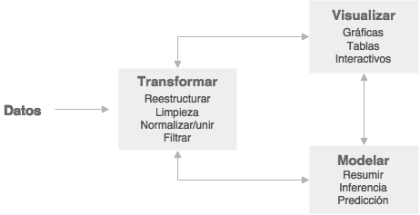

Chapter 2 Comandos básicos de R.
2.1 Introducción
El objetivo de este tutorial es familiarizarnos con los conceptos básicos de R. ¿Qué es un objeto en R? ¿Con qué clases/tipos de objetos se trabaja en R? Aprenderemos a definir vectores y operar con ellos; a crear matrices, listas y data frames; a seleccionar elementos, añadir filas y columnas, etc. Como lo que se pretende es que se entienda la filosofía y la práctica del trabajo con R, todos los conceptos que se introducen se ilustran con ejemplos muy sencillos. No obstante, la selección de funciones que se realiza en este tutorial tienen una aplicación directa en el tratamiento real de datos.
Vamos a realizar paso a paso este sencillo ejercicio para introducir algunos conceptos importantes.
3+4## [1] 7## [1] 7
log(10)## [1] 2.302585## [1] 2.302585
x <- 3+4
x # x es un vector cuya primera componente es 7. Enseguida vamos con los vectores!## [1] 7## [1] 7
y = 2+6
y## [1] 8## [1] 8
z <- c(x,y)
z## [1] 7 8## [1] 7 8
mean(z)## [1] 7.5## [1] 7.5
w <- mean(z)
w## [1] 7.5## [1] 7.5
round(w, digits=0)## [1] 8## [1] 8R utiliza funciones para realizar operaciones. Una función es, por ejemplo, mean(). Para utilizar una función deben especificarse unos argumentos, que es lo que escribimos dentro de los paréntesis. En el caso de la función round() hemos especificado dos argumentos: el vector que queremos redondear (w) y el número de decimales del redondeo (digits).
El símbolo <- es el operador para asignar. También se puede utilizar = (o menos frecuente ->), aunque es preferible utilizar el <-.
El símbolo # se utiliza para introducir un comentario. Todo lo que quede a la derecha de # no se ejecutará.
Cuando se realiza una asignación se obtiene un objeto. Podemos ver el resultado o contenido de un objeto de varias formas. Por ejemplo, para ver qué es el objeto x podemos escribir en la consola:
x
print(x)
(x <- 3+4)
2.2 Vectores
Básicamente R trabaja con los siguientes tipos de objetos:
VECTORES
MATRICES y ARRAYS (variables indexadas)
LISTAS
FACTORES
DATA FRAMES
FUNCIONES
Empezaremos viendo los objetos más sencillos, los vectores. Poco a poco iremos viendo el resto de objetos.
La mayoría de las operaciones (+, -, *, /) y funciones en R están definidas con carácter vectorial. ¿Qué significa esto? Que R opera componente a componente.
Antes de entender el concepto “caracter vectorial”, vamos a ver cómo se define/crea un vector.
Para crear un vector se utiliza la función c() (c de concatenate). Por ejemplo:
x <- c(1,2,3,4)
x # x es un vector que tiene cuatro componentes## [1] 1 2 3 4y <- c(5,6,7,8)
y## [1] 5 6 7 8Volvemos sobre el tema del carácter vectorial, es decir, se opera componente a componente. Pensemos, si
z <- x + y¿Qué resultado espero obtener para z?
Exacto!!! Como la operación se realiza vectorialmente (componente a componente, muy importante!) el resultado es:
z## [1] 6 8 10 12Vamos a ver si lo entendemos de verdad. Supongamos que x e y son los siguientes vectores:
x <- c(1,2,3,4)
y <- c(1,2,3)¿Qué longitud tienen los vectores x e y? Aquí la respuesta está clara, pero en aplicaciones reales utilizaríamos la función length().
length(x) # esta función es muy útil, conviene recordarla.## [1] 4## [1] 4
length(y)## [1] 3## [1] 3Los vectores no tienen la misma longitud, entonces.. ¿Cuál será el resultado de z <- x + y?
z <- x+y## Warning in x + y: longer object length is not a multiple of shorter object
## lengthz## [1] 2 4 6 5R nos da un mensaje de aviso (warning), no es lo mismo que un error. Nos avisa que hay algo que no cuadra pero…realiza la operación que nosotros queremos.
Una cuestión muy importante que siempre tenemos que tener en cuenta cuando trabajamos con vectores es que en un vector sólo podemos concatenar elementos del mismo tipo. ¿Qué tipos/clases de elementos (o datos) tenemos en R?
Carácter
Numéricos
Enteros
Complejos
Lógicos
Veamos algunos ejemplos…
x <- c(1,2,3,4) # creamos el vector x
class(x) # devuelve el tipo de objeto## [1] "numeric"y <- c("a","b")
class(y)## [1] "character"z <- c(1L,2L,3L) # escribimos L detrás del número para obligar a que sea entero
class(z)## [1] "integer"w <- c(TRUE, F) # en general, puede escribirse TRUE/FALSE o T/F
class(w)## [1] "logical"t <- c(1+2i, 1+3i)
class(t)## [1] "complex"En los ejemplos anteriores hemos definido un vector en el que todos sus elementos eran del mismo tipo. Pero….¿qué pasa si tenemos los siguientes vectores?
x <- c(1,2,"a")
y <- c(FALSE, 1)
z <- c("a",T)¿De qué tipo son ahora los vectores x, y, z?
class(x)## [1] "character"## [1] "character"
class(y)## [1] "numeric"## [1] "numeric"
class(z)## [1] "character"## [1] "character"R ha forzado a que todos los elementos del vector sean del mismo tipo. A esto se le llama implicit coercion. Fijémonos cúal es el resultado de los vectores que hemos definido antes.
x## [1] "1" "2" "a"y## [1] 0 1z## [1] "a" "TRUE"En ocasiones somos nosotros los que estamos interesados en forzar que todos los elementos del vector sean del mismo tipo (esto es la explicit coercion). Para ello utilizamos las funciones as.numeric() , as.character(), as.logical() … Si el resultado no tiene sentido R producirá un mensaje de error o warning. Un ejemplo:
x <- c(1,2,"a")
x## [1] "1" "2" "a"## [1] "1" "2" "a"
as.numeric(x)## Warning: NAs introduced by coercion## [1] 1 2 NA## [1] 1 2 NA
as.character(x)## [1] "1" "2" "a"## [1] "1" "2" "a"Por último, podemos evaluar el tipo/clase de objeto con las funciones is.numeric(), is.character(), etc.
2.2.1 Acceder a un elemento de un objeto
Para seleccionar/acceder a un elemento de un objeto se suelen emplear: [], $, [[]].
Vamos a crear el objeto x que será un vector de cuatro componentes formado por los cuatro primeros números pares. Así:
x <- c(2,4,6,8)Si queremos acceder/seleccionar/extraer al/el segundo componente de x
x[2]## [1] 42.2.2 Enlistar y borrar objetos
Las funciones ls() y objects() hacen lo mismo: listan los objetos que hemos definido en la sesión.
ls()## [1] "t" "w" "x" "y" "z"objects()## [1] "t" "w" "x" "y" "z"Si queremos borrar objetos utilizamos la función rm()
rm(z) # borramos el objeto z
ls()## [1] "t" "w" "x" "y"y si estamos interesados en borrar todos los objetos que hemos definido:
rm(list=ls()) # o también rm(list=objects())
ls()## character(0)2.2.2.1 Ejercicios
- Crea un vector x con 5 elementos numéricos.
- Crea un vector y con 5 elementos de tipo caractér.
- ¿De qué tipo es el siguiente vector?:
z <- c("32","52","6","82","12")- Suma el vector x y el vector z ¿Tienes que hacer alguna transformación?
- Multiplica el vector z por 3 y después súmalo al vector x.
2.3 Tipos de objetos
2.3.1 Matrices
La función matrix() permite organizar los datos en una matriz con tantas filas y columnas como se indiquen.
Vamos a pedir ayuda a R sobre la función matrix()
?matrix # una forma de obtener ayuda en R es escribiendo ? delante de la función de la que solicitamos ayuda2.3.1.1 Cómo crear y trabajar con matrices
Una vez hemos leído en la ayuda cómo usar la función matrix, vamos a practicarlo con el siguiente ejemplo. Pero antes de ejecutarlo, pensemos en qué es lo que queremos hacer y, sobre todo, pensemos en cuál es el resultado que esperamos obtener.
x <- matrix (data= c(1,2,3,4), nrow=2, ncol=2) # o x <- matrix (c(1,2,3,4), nrow=2, ncol=2)
x## [,1] [,2]
## [1,] 1 3
## [2,] 2 4Observemos que se ha creado una matrix de 2x2 (2 filas y 2 columnas) y, además, muy importante, ¿cómo se ha completado la matriz? ¡Exacto! La matriz se ha rellenado por columnas. Si queremos que se rellene por filas hay que incluir el argumento byrow en los argumentos de la función.
y <- matrix (c(1,2,3,4), nrow=2, ncol=2, byrow=T)
y## [,1] [,2]
## [1,] 1 2
## [2,] 3 4Fíjense en la diferencia entre los objetos x e y.
Una forma más simple para definir una matrix es:
y <- matrix (c(1,2,3,4), 2, 2, byrow=T)
y## [,1] [,2]
## [1,] 1 2
## [2,] 3 4aunque también podíamos haber omitido el argumento relativo al número de filas o de columnas, porque conocida una dimensión R completaría la matrix dados los datos con los que se trabaja.
y <- matrix (c(1,2,3,4), 2, byrow=T) # no especificamos nrow porque por defecto es el primer argumento después de los datos
y## [,1] [,2]
## [1,] 1 2
## [2,] 3 4x <- matrix(c(1,2,3,4,5,6), ncol=3)
x## [,1] [,2] [,3]
## [1,] 1 3 5
## [2,] 2 4 62.3.1.2 Seleccionando elementos de una matriz
Lo primero, vamos a crear el objeto A que será una matriz.
A <- matrix(1:16,4,4)
A## [,1] [,2] [,3] [,4]
## [1,] 1 5 9 13
## [2,] 2 6 10 14
## [3,] 3 7 11 15
## [4,] 4 8 12 16Para seleccionar elementos de una matriz utilizamos el símbolo de los corchetes: [].
Pensemos un momento en el posible resultado de estos ejemplos antes de efectuarlos.
A[2,3]## [1] 10A[c(1,2),c(2,4)]## [,1] [,2]
## [1,] 5 13
## [2,] 6 14A[1:3,2:4]## [,1] [,2] [,3]
## [1,] 5 9 13
## [2,] 6 10 14
## [3,] 7 11 15A[1,]## [1] 1 5 9 13A[1:2,]## [,1] [,2] [,3] [,4]
## [1,] 1 5 9 13
## [2,] 2 6 10 14A[,2:3]## [,1] [,2]
## [1,] 5 9
## [2,] 6 10
## [3,] 7 11
## [4,] 8 122.3.2 Listas
A diferencia de los vectores o matrices, las listas pueden contener elementos/componentes de distinto tipo. Observemos esta lista que tiene 5 componentes (pueden ser matrices, vectores, dataframes,..).
x <- list(c(1,2,3,4), "Curso", F, 1+2i, 3L,A)
x## [[1]]
## [1] 1 2 3 4
##
## [[2]]
## [1] "Curso"
##
## [[3]]
## [1] FALSE
##
## [[4]]
## [1] 1+2i
##
## [[5]]
## [1] 3
##
## [[6]]
## [,1] [,2] [,3] [,4]
## [1,] 1 5 9 13
## [2,] 2 6 10 14
## [3,] 3 7 11 15
## [4,] 4 8 12 16Utilizamos el doble corchete [[]] para acceder al contenido concreto de una lista.
x[[3]] # accedemos al tercer componente de la lista## [1] FALSEx[[1]][2] # accedemos al segundo elemento del primer componente de la lista## [1] 2x[[6]][1,2]## [1] 5Vamos a crear otra lista para practicar.
y <- list( Titulacion = c("Economía", "Sociología", "Derecho"), Edad =c(25,26,27))
y## $Titulacion
## [1] "Economía" "Sociología" "Derecho"
##
## $Edad
## [1] 25 26 27Fijémonos en la diferencia de presentación de las listas x e y. Como en la lista y hemos nombrado los componentes, estos aparecen al ejecutar el objeto precedidos del símbolo $. Ahora también podemos acceder a un componente de la lista por su nombre.
y$Titulacion## [1] "Economía" "Sociología" "Derecho"y[[1]]## [1] "Economía" "Sociología" "Derecho"Evidentemente, también podemos realizar operaciones con listas.
y[[2]]*3## [1] 75 78 812.3.2.1 Ejercicios
- Crea dos matrices A y B de dimensión 3x3.
- Suma las dos matrices ¿Qué obtuviste?
- Multiplica las las dos matrices ¿Qué obtuviste?
- Trata de definir una matriz con valores tipo caractér.
- Crea una lista con los siguientes elementos: un número, un vector, una matrix y una palabra.
- Obten el elemento de la lista que es una matriz y multiplícalo por la matriz B.
2.3.3 Data Frame
Los data frame se usan para almacenar datos en forma de tablas (filas / columnas), como estamos habituados en Excel, Spss, etc.
Los data frame pueden almacenar objetos/datos de distinto tipo: numéricos, carácter, … En las matrices todos los elementos tenían que ser enteros o numéricos.
Los data frame pueden entenderse como un tipo especial de lista donde cada elemento de la lista tiene que tener la misma longitud. Cada elemento de la lista sería una columna y la longitud de cada elemento de la lista serían las filas.
Aunque normalmente los data frame los creamos al cargar/leer una base de datos (ver el tutorial), vamos crear una data frame para ver su estructura.
x <- data.frame(Titulacion = c("Economía", "ADE", "Sociología", "Magisterio"), Edad = c(25, 27, 25, 24))
x## Titulacion Edad
## 1 Economía 25
## 2 ADE 27
## 3 Sociología 25
## 4 Magisterio 24¿Cuál es la dimensión del objeto x (que es una data frame)?
nrow(x) # número de filas## [1] 4ncol(x) # número de columnas## [1] 2dim(x) # número de filas y columnas## [1] 4 2Para acceder a los elementos de un data frame utilizamos los símbolos $ o []. La forma de proceder es similar a la que se ha visto con vectores o matrices.
Si queremos seleccionar la variable Titulacion del objeto x (que es un data frame):
x$Titulacion## [1] Economía ADE Sociología Magisterio
## Levels: ADE Economía Magisterio Sociologíax[1]## Titulacion
## 1 Economía
## 2 ADE
## 3 Sociología
## 4 Magisterioy para seleccionar sus dos primeros elementos:
x$Titulacion[1:2]## [1] Economía ADE
## Levels: ADE Economía Magisterio SociologíaPor avanzar alguna cosas que veremos más adelante en la práctica, podemos incluir directamente una nueva variable a nuestro data frame. Por ejemplo, vamos a añadir la variable id (de identificador) al objeto x. Esto lo podemos hacer directamente utilizando el símbolo $.
x$id <- 1:4
x## Titulacion Edad id
## 1 Economía 25 1
## 2 ADE 27 2
## 3 Sociología 25 3
## 4 Magisterio 24 4o podemos crear la nueva variable, por ejemplo la variable obs (de observación) y después combinarla con nuestro data frame x.
obs <- 1:4
x <- cbind(obs,x)
x## obs Titulacion Edad id
## 1 1 Economía 25 1
## 2 2 ADE 27 2
## 3 3 Sociología 25 3
## 4 4 Magisterio 24 42.3.3.1 Ver el contenido de un data frame: head y tail.
Normalmente los data frames con los que trabajamos tienen muchas filas (individuos) y muchas columnas (variables). Si directamente escribimos el nombre del objeto (data frame) para ver su contenido lo que ocurrirá es que veremos poca cosa, apenas si observaremos como R nos lista todo el contenido de forma continua. Para entender lo que queremos decir, vamos a ver el siguiente ejemplo en el que cargamos los datos EuStockMarkets. Estos datos hacen referencia al precio de cierre diario entre los años 1991 y 1998 de las principales bolsas europeas.
data(EuStockMarkets) # cargamos los datos EuStockMarkets
EuStockMarkets # para ver el contenido del objeto## Time Series:
## Start = c(1991, 130)
## End = c(1998, 169)
## Frequency = 260
## DAX SMI CAC FTSE
## 1991.496 1628.75 1678.1 1772.8 2443.6
## 1991.500 1613.63 1688.5 1750.5 2460.2
## 1991.504 1606.51 1678.6 1718.0 2448.2
## 1991.508 1621.04 1684.1 1708.1 2470.4
## 1991.512 1618.16 1686.6 1723.1 2484.7
## 1991.515 1610.61 1671.6 1714.3 2466.8
## 1991.519 1630.75 1682.9 1734.5 2487.9
## 1991.523 1640.17 1703.6 1757.4 2508.4
## 1991.527 1635.47 1697.5 1754.0 2510.5
## 1991.531 1645.89 1716.3 1754.3 2497.4
## 1991.535 1647.84 1723.8 1759.8 2532.5
## 1991.538 1638.35 1730.5 1755.5 2556.8
## 1991.542 1629.93 1727.4 1758.1 2561.0
## 1991.546 1621.49 1733.3 1757.5 2547.3
## 1991.550 1624.74 1734.0 1763.5 2541.5
## 1991.554 1627.63 1728.3 1762.8 2558.5
## 1991.558 1631.99 1737.1 1768.9 2587.9
## 1991.562 1621.18 1723.1 1778.1 2580.5
## 1991.565 1613.42 1723.6 1780.1 2579.6
## 1991.569 1604.95 1719.0 1767.7 2589.3
## 1991.573 1605.75 1721.2 1757.9 2595.0
## 1991.577 1616.67 1725.3 1756.6 2595.6
## 1991.581 1619.29 1727.2 1754.7 2588.8
## 1991.585 1620.49 1727.2 1766.8 2591.7
## 1991.588 1619.67 1731.6 1766.5 2601.7
## 1991.592 1623.07 1724.1 1762.2 2585.4
## 1991.596 1613.98 1716.9 1759.5 2573.3
## 1991.600 1631.87 1723.4 1782.4 2597.4
## 1991.604 1630.37 1723.0 1789.5 2600.6
## 1991.608 1633.47 1728.4 1783.5 2570.6
## 1991.612 1626.55 1722.1 1780.4 2569.4
## 1991.615 1650.43 1724.5 1808.8 2584.9
## 1991.619 1650.06 1733.6 1820.3 2608.8
## 1991.623 1654.11 1739.0 1820.3 2617.2
## 1991.627 1653.60 1726.2 1820.3 2621.0
## 1991.631 1501.82 1587.4 1687.5 2540.5
## 1991.635 1524.28 1630.6 1725.6 2554.5
## 1991.638 1603.65 1685.5 1792.9 2601.9
## 1991.642 1622.49 1701.3 1819.1 2623.0
## 1991.646 1636.68 1718.0 1833.5 2640.7
## 1991.650 1652.10 1726.2 1853.4 2640.7
## 1991.654 1645.81 1716.6 1849.7 2619.8
## 1991.658 1650.36 1725.8 1851.8 2624.2
## 1991.662 1651.55 1737.4 1857.7 2638.2
## 1991.665 1649.88 1736.6 1864.3 2645.7
## 1991.669 1653.52 1732.4 1863.5 2679.6
## 1991.673 1657.51 1731.2 1873.2 2669.0
## 1991.677 1649.55 1726.9 1860.8 2664.6
## 1991.681 1649.09 1727.8 1868.7 2663.3
## 1991.685 1646.41 1720.2 1860.4 2667.4
## 1991.688 1638.65 1715.4 1855.9 2653.2
## 1991.692 1625.80 1708.7 1840.5 2630.8
## 1991.696 1628.64 1713.0 1842.6 2626.6
## 1991.700 1632.22 1713.5 1861.2 2641.9
## 1991.704 1633.65 1718.0 1876.2 2625.8
## 1991.708 1631.17 1701.7 1878.3 2606.0
## 1991.712 1635.80 1701.7 1878.4 2594.4
## 1991.715 1621.27 1684.9 1869.4 2583.6
## 1991.719 1624.70 1687.2 1880.4 2588.7
## 1991.723 1616.13 1690.6 1885.5 2600.3
## 1991.727 1618.12 1684.3 1888.4 2579.5
## 1991.731 1627.80 1679.9 1885.2 2576.6
## 1991.735 1625.79 1672.9 1877.9 2597.8
## 1991.738 1614.80 1663.1 1876.5 2595.6
## 1991.742 1612.80 1669.3 1883.8 2599.0
## 1991.746 1605.47 1664.7 1880.6 2621.7
## 1991.750 1609.32 1672.3 1887.4 2645.6
## 1991.754 1607.48 1687.7 1878.3 2644.2
## 1991.758 1607.48 1686.8 1867.1 2625.6
## 1991.762 1604.89 1686.6 1851.9 2624.6
## 1991.765 1589.12 1675.8 1843.6 2596.2
## 1991.769 1582.27 1677.4 1848.1 2599.5
## 1991.773 1567.99 1673.2 1843.4 2584.1
## 1991.777 1568.16 1665.0 1843.6 2570.8
## 1991.781 1569.71 1671.3 1833.8 2555.0
## 1991.785 1571.74 1672.4 1833.4 2574.5
## 1991.788 1585.41 1676.2 1856.9 2576.7
## 1991.792 1570.01 1692.6 1863.4 2579.0
## 1991.796 1561.89 1696.5 1855.5 2588.7
## 1991.800 1565.18 1716.1 1864.2 2601.1
## 1991.804 1570.34 1713.3 1846.0 2575.7
## 1991.808 1577.00 1705.1 1836.8 2559.5
## 1991.812 1590.29 1711.3 1830.4 2561.1
## 1991.815 1572.72 1709.8 1831.6 2528.3
## 1991.819 1572.07 1688.6 1834.8 2514.7
## 1991.823 1579.19 1698.9 1852.1 2558.5
## 1991.827 1588.73 1700.0 1849.8 2553.3
## 1991.831 1586.01 1693.0 1861.8 2577.1
## 1991.835 1579.77 1683.9 1856.7 2566.0
## 1991.838 1572.58 1679.2 1856.7 2549.5
## 1991.842 1568.09 1673.9 1841.5 2527.8
## 1991.846 1578.21 1683.9 1846.9 2540.9
## 1991.850 1573.94 1688.4 1836.1 2534.2
## 1991.854 1582.06 1693.9 1838.6 2538.0
## 1991.858 1610.18 1720.9 1857.6 2559.0
## 1991.862 1605.16 1717.9 1857.6 2554.9
## 1991.865 1623.84 1733.6 1858.4 2575.5
## 1991.869 1615.26 1729.7 1846.8 2546.5
## 1991.873 1627.08 1735.6 1868.5 2561.6
## 1991.877 1626.97 1734.1 1863.2 2546.6
## 1991.881 1605.70 1699.3 1808.3 2502.9
## 1991.885 1589.70 1678.6 1765.1 2463.1
## 1991.888 1589.70 1675.5 1763.5 2472.6
## 1991.892 1603.26 1670.1 1766.0 2463.5
## 1991.896 1599.75 1652.2 1741.3 2446.3
## 1991.900 1590.86 1635.0 1743.3 2456.2
## 1991.904 1603.50 1654.9 1769.0 2471.5
## 1991.908 1589.86 1642.0 1757.9 2447.5
## 1991.912 1587.92 1638.7 1754.9 2428.6
## 1991.915 1571.06 1622.6 1739.7 2420.2
## 1991.919 1549.81 1596.1 1708.8 2414.9
## 1991.923 1549.36 1612.4 1722.2 2420.2
## 1991.927 1554.65 1625.0 1713.9 2423.8
## 1991.931 1557.52 1610.5 1703.2 2407.0
## 1991.935 1555.31 1606.6 1685.7 2388.7
## 1991.938 1559.76 1610.7 1663.4 2409.6
## 1991.942 1548.44 1603.1 1636.9 2392.0
## 1991.946 1543.99 1591.5 1645.6 2380.2
## 1991.950 1550.21 1605.2 1671.6 2423.3
## 1991.954 1557.03 1621.4 1688.3 2451.6
## 1991.958 1551.78 1622.5 1696.8 2440.8
## 1991.962 1562.89 1626.6 1711.7 2432.9
## 1991.965 1570.28 1627.4 1706.2 2413.6
## 1991.969 1559.26 1614.9 1684.2 2391.6
## 1991.973 1545.87 1602.3 1648.5 2358.1
## 1991.977 1542.77 1598.3 1633.6 2345.4
## 1991.981 1542.77 1627.0 1699.1 2384.4
## 1991.985 1542.77 1627.0 1699.1 2384.4
## 1991.988 1542.77 1627.0 1722.5 2384.4
## 1991.992 1564.27 1655.7 1720.7 2418.7
## 1991.996 1577.26 1670.1 1741.9 2420.0
## 1992.000 1577.26 1670.1 1765.7 2493.1
## 1992.004 1577.26 1670.1 1765.7 2493.1
## 1992.008 1598.19 1670.1 1749.9 2492.8
## 1992.012 1604.05 1704.0 1770.3 2504.1
## 1992.015 1604.69 1711.8 1787.6 2493.2
## 1992.019 1593.65 1700.5 1778.7 2482.9
## 1992.023 1581.68 1690.3 1785.6 2467.1
## 1992.027 1599.14 1715.4 1833.9 2497.9
## 1992.031 1613.82 1723.5 1837.4 2477.9
## 1992.035 1620.45 1719.4 1824.3 2490.1
## 1992.038 1629.51 1734.4 1843.8 2516.3
## 1992.042 1663.70 1772.8 1873.6 2537.1
## 1992.046 1664.09 1760.3 1860.2 2541.6
## 1992.050 1669.29 1747.2 1860.2 2536.7
## 1992.054 1685.14 1750.2 1865.9 2544.9
## 1992.058 1687.07 1755.3 1867.9 2543.4
## 1992.062 1680.13 1754.6 1841.3 2522.0
## 1992.065 1671.84 1751.2 1838.7 2525.3
## 1992.069 1669.52 1752.5 1849.9 2510.4
## 1992.073 1686.71 1769.4 1869.3 2539.9
## 1992.077 1685.51 1767.6 1890.6 2552.0
## 1992.081 1671.01 1750.0 1879.6 2546.5
## 1992.085 1683.06 1747.1 1873.9 2550.8
## 1992.088 1685.70 1753.5 1875.3 2571.2
## 1992.092 1685.66 1752.8 1857.0 2560.2
## 1992.096 1678.77 1752.9 1856.5 2556.8
## 1992.100 1685.85 1764.7 1865.8 2547.1
## 1992.104 1683.71 1776.8 1860.6 2534.3
## 1992.108 1686.59 1779.3 1861.6 2517.2
## 1992.112 1683.73 1785.1 1865.6 2538.4
## 1992.115 1679.14 1798.2 1864.1 2537.1
## 1992.119 1685.03 1794.1 1861.6 2523.7
## 1992.123 1680.81 1795.2 1876.5 2522.6
## 1992.127 1676.17 1780.4 1865.1 2513.9
## 1992.131 1688.46 1789.5 1882.1 2541.0
## 1992.135 1696.55 1794.2 1912.2 2555.9
## 1992.138 1690.24 1784.4 1915.4 2536.7
## 1992.142 1711.35 1800.1 1951.2 2543.4
## 1992.146 1711.29 1804.0 1962.4 2542.3
## 1992.150 1729.86 1816.2 1976.5 2559.7
## 1992.154 1716.63 1810.5 1953.5 2546.8
## 1992.158 1743.36 1821.9 1981.3 2565.0
## 1992.162 1745.17 1828.2 1985.1 2562.0
## 1992.165 1746.76 1840.6 1983.4 2562.1
## 1992.169 1749.29 1841.1 1979.7 2554.3
## 1992.173 1763.86 1846.3 1983.8 2565.4
## 1992.177 1762.27 1850.0 1988.1 2558.4
## 1992.181 1762.29 1839.0 1973.0 2538.3
## 1992.185 1746.77 1820.2 1966.9 2533.1
## 1992.188 1753.50 1815.2 1976.3 2550.7
## 1992.192 1753.21 1820.6 1993.9 2574.8
## 1992.196 1739.88 1807.1 1968.0 2522.4
## 1992.200 1723.92 1791.4 1941.8 2493.3
## 1992.204 1734.42 1806.2 1947.1 2476.0
## 1992.208 1723.13 1798.7 1929.2 2470.7
## 1992.212 1732.92 1818.2 1943.6 2491.2
## 1992.215 1729.89 1820.5 1928.2 2464.7
## 1992.219 1725.74 1833.3 1922.0 2467.6
## 1992.223 1730.90 1837.1 1919.1 2456.6
## 1992.227 1714.17 1818.2 1884.6 2441.0
## 1992.231 1716.20 1824.1 1896.3 2458.7
## 1992.235 1719.06 1830.1 1928.3 2464.9
## 1992.238 1718.21 1835.6 1934.8 2472.2
## 1992.242 1698.84 1828.7 1923.5 2447.9
## 1992.246 1714.76 1839.2 1943.8 2452.9
## 1992.250 1718.35 1837.2 1942.4 2440.1
## 1992.254 1706.69 1826.7 1928.1 2408.6
## 1992.258 1723.37 1838.0 1942.0 2405.4
## 1992.262 1716.18 1829.1 1942.7 2382.7
## 1992.265 1738.78 1843.1 1974.8 2400.9
## 1992.269 1737.41 1850.5 1975.4 2404.2
## 1992.273 1714.77 1827.1 1907.5 2393.2
## 1992.277 1724.24 1829.1 1943.6 2436.4
## 1992.281 1733.77 1848.0 1974.1 2572.6
## 1992.285 1729.96 1840.5 1963.3 2591.0
## 1992.288 1734.46 1853.8 1972.3 2600.5
## 1992.292 1744.35 1874.1 1990.7 2640.2
## 1992.296 1746.88 1871.3 1978.2 2638.6
## 1992.300 1746.88 1871.3 1978.2 2638.6
## 1992.304 1746.88 1871.3 1978.2 2638.6
## 1992.308 1747.47 1860.5 1980.4 2625.8
## 1992.312 1753.10 1874.7 1983.7 2607.8
## 1992.315 1745.17 1880.1 1978.1 2609.8
## 1992.319 1745.72 1874.7 1984.9 2643.0
## 1992.323 1742.92 1875.6 1995.7 2658.2
## 1992.327 1731.68 1859.5 2006.6 2651.0
## 1992.331 1731.18 1874.2 2036.7 2664.9
## 1992.335 1728.09 1880.1 2031.1 2654.1
## 1992.338 1728.09 1880.1 2031.1 2659.8
## 1992.342 1731.29 1907.7 2041.6 2659.8
## 1992.346 1733.82 1920.5 2046.9 2662.2
## 1992.350 1745.78 1937.3 2047.2 2698.7
## 1992.354 1752.57 1936.8 2063.4 2701.9
## 1992.358 1748.13 1949.1 2063.4 2725.7
## 1992.362 1750.70 1963.7 2077.5 2737.8
## 1992.365 1747.91 1950.8 2063.6 2722.4
## 1992.369 1745.79 1953.5 2053.2 2720.5
## 1992.373 1735.34 1945.0 2017.0 2694.7
## 1992.377 1719.92 1921.1 2024.0 2682.6
## 1992.381 1763.59 1939.1 2051.6 2703.6
## 1992.385 1766.76 1928.0 2023.1 2700.6
## 1992.388 1785.40 1933.4 2030.8 2711.9
## 1992.392 1783.56 1925.7 2016.8 2702.0
## 1992.396 1804.42 1931.7 2045.1 2715.0
## 1992.400 1812.33 1928.7 2046.3 2715.0
## 1992.404 1799.51 1924.5 2029.6 2704.6
## 1992.408 1792.80 1914.2 2014.1 2698.6
## 1992.412 1792.80 1914.2 2014.1 2694.2
## 1992.415 1806.36 1920.6 2033.3 2707.6
## 1992.419 1798.23 1923.3 2017.4 2697.6
## 1992.423 1800.62 1930.4 2024.9 2705.9
## 1992.427 1786.19 1915.2 1992.6 2680.9
## 1992.431 1791.35 1916.9 1994.9 2681.9
## 1992.435 1789.05 1913.8 1981.6 2668.5
## 1992.438 1789.05 1913.8 1981.6 2645.8
## 1992.442 1784.71 1899.7 1962.2 2635.4
## 1992.446 1789.45 1888.0 1953.7 2636.1
## 1992.450 1779.74 1868.8 1928.8 2614.1
## 1992.454 1786.97 1879.9 1928.3 2603.7
## 1992.458 1773.25 1865.7 1918.1 2593.6
## 1992.462 1781.62 1881.3 1931.4 2616.3
## 1992.465 1773.75 1873.1 1908.8 2598.4
## 1992.469 1773.75 1862.5 1891.8 2562.7
## 1992.473 1776.34 1869.3 1913.9 2584.8
## 1992.477 1770.72 1846.9 1885.8 2550.3
## 1992.481 1772.39 1847.1 1895.8 2560.6
## 1992.485 1762.55 1838.3 1899.6 2532.6
## 1992.488 1764.35 1845.8 1920.3 2557.3
## 1992.492 1752.83 1835.5 1915.3 2534.1
## 1992.496 1755.98 1846.6 1907.3 2515.8
## 1992.500 1754.95 1854.8 1900.6 2521.2
## 1992.504 1759.90 1845.3 1880.9 2493.9
## 1992.508 1759.84 1854.5 1873.5 2476.1
## 1992.512 1776.50 1870.5 1883.6 2497.1
## 1992.515 1769.98 1862.6 1868.5 2469.0
## 1992.519 1766.98 1856.6 1879.1 2493.7
## 1992.523 1752.29 1837.6 1847.8 2472.6
## 1992.527 1760.17 1846.7 1861.8 2497.9
## 1992.531 1750.32 1856.5 1859.4 2490.8
## 1992.535 1731.44 1841.8 1859.4 2478.3
## 1992.538 1735.51 1835.0 1859.4 2484.0
## 1992.542 1733.84 1844.4 1853.3 2486.4
## 1992.546 1730.78 1838.9 1851.2 2483.4
## 1992.550 1699.46 1805.6 1801.8 2431.9
## 1992.554 1652.71 1756.6 1767.9 2403.7
## 1992.558 1654.09 1786.1 1762.7 2415.6
## 1992.562 1636.81 1757.1 1727.5 2387.9
## 1992.565 1622.81 1762.8 1734.6 2399.5
## 1992.569 1613.36 1756.8 1734.6 2377.2
## 1992.573 1617.78 1761.9 1755.4 2348.0
## 1992.577 1617.18 1778.5 1769.0 2373.4
## 1992.581 1637.62 1812.7 1801.6 2423.2
## 1992.585 1622.20 1806.1 1782.6 2411.6
## 1992.588 1608.49 1798.1 1754.7 2399.6
## 1992.592 1605.11 1794.9 1784.4 2420.2
## 1992.596 1609.61 1805.4 1787.6 2407.5
## 1992.600 1624.94 1820.3 1798.0 2392.8
## 1992.604 1618.07 1819.6 1793.8 2377.6
## 1992.608 1611.96 1809.6 1777.3 2350.1
## 1992.612 1578.95 1799.9 1755.2 2325.7
## 1992.615 1561.39 1800.3 1737.8 2309.6
## 1992.619 1547.87 1793.3 1730.1 2303.1
## 1992.623 1548.63 1784.8 1722.4 2318.0
## 1992.627 1560.16 1791.7 1753.5 2356.8
## 1992.631 1554.76 1800.2 1757.3 2376.1
## 1992.635 1531.87 1788.6 1736.7 2354.7
## 1992.638 1526.14 1775.7 1734.2 2363.5
## 1992.642 1509.03 1753.5 1724.2 2359.4
## 1992.646 1530.03 1768.2 1744.2 2365.7
## 1992.650 1484.97 1727.9 1689.7 2311.1
## 1992.654 1464.03 1709.6 1667.7 2281.0
## 1992.658 1475.11 1704.6 1667.8 2285.0
## 1992.662 1516.12 1740.6 1687.6 2311.6
## 1992.665 1519.69 1745.7 1687.5 2312.6
## 1992.669 1529.97 1751.7 1684.9 2312.6
## 1992.673 1516.44 1747.3 1674.2 2298.4
## 1992.677 1515.53 1757.8 1711.4 2313.0
## 1992.681 1543.89 1774.2 1780.5 2381.9
## 1992.685 1534.72 1774.4 1779.0 2362.2
## 1992.688 1538.66 1788.3 1779.3 2372.2
## 1992.692 1536.71 1788.0 1763.7 2337.7
## 1992.696 1523.83 1779.1 1756.8 2327.5
## 1992.700 1527.10 1792.8 1774.2 2340.6
## 1992.704 1530.20 1812.0 1802.0 2370.9
## 1992.708 1601.50 1872.1 1873.6 2422.1
## 1992.712 1580.29 1851.4 1836.2 2370.0
## 1992.715 1595.09 1873.4 1859.8 2378.3
## 1992.719 1579.47 1889.6 1852.7 2483.9
## 1992.723 1600.59 1897.5 1882.9 2567.0
## 1992.727 1566.00 1888.8 1826.1 2560.1
## 1992.731 1557.01 1900.4 1832.8 2586.0
## 1992.735 1542.74 1913.4 1828.9 2580.5
## 1992.738 1536.30 1909.9 1829.5 2621.2
## 1992.742 1510.66 1910.8 1843.5 2601.0
## 1992.746 1481.03 1879.2 1770.3 2560.0
## 1992.750 1483.83 1880.2 1731.9 2565.5
## 1992.754 1470.09 1878.3 1736.7 2553.0
## 1992.758 1484.78 1885.2 1724.0 2572.3
## 1992.762 1475.41 1867.6 1683.3 2549.7
## 1992.765 1402.34 1788.0 1611.0 2446.3
## 1992.769 1421.49 1820.5 1612.5 2488.4
## 1992.773 1434.61 1858.2 1654.2 2517.1
## 1992.777 1446.32 1870.3 1673.9 2538.8
## 1992.781 1437.65 1878.4 1657.3 2541.2
## 1992.785 1441.57 1881.5 1655.1 2557.2
## 1992.788 1471.64 1893.2 1685.1 2584.7
## 1992.792 1453.95 1889.3 1667.9 2574.7
## 1992.796 1453.79 1877.3 1650.0 2546.6
## 1992.800 1458.02 1884.0 1664.2 2563.9
## 1992.804 1479.59 1904.7 1679.1 2562.2
## 1992.808 1504.89 1922.7 1731.3 2617.0
## 1992.812 1496.54 1908.5 1722.2 2645.7
## 1992.815 1511.00 1911.4 1730.7 2658.1
## 1992.819 1528.86 1921.1 1766.4 2669.7
## 1992.823 1534.02 1930.8 1770.7 2661.6
## 1992.827 1536.60 1927.8 1774.5 2669.8
## 1992.831 1508.19 1908.3 1749.9 2650.4
## 1992.835 1493.54 1905.9 1730.9 2642.3
## 1992.838 1489.68 1911.1 1742.4 2658.3
## 1992.842 1482.44 1921.6 1742.4 2687.8
## 1992.846 1483.34 1933.6 1786.9 2705.6
## 1992.850 1470.57 1942.0 1804.1 2691.7
## 1992.854 1484.84 1951.5 1804.7 2711.1
## 1992.858 1487.71 1955.7 1793.6 2702.7
## 1992.862 1508.63 1957.4 1786.7 2695.4
## 1992.865 1515.27 1962.3 1798.5 2714.6
## 1992.869 1509.84 1946.1 1798.5 2696.8
## 1992.873 1542.28 1950.2 1821.5 2726.4
## 1992.877 1541.79 1929.7 1796.8 2697.5
## 1992.881 1542.48 1913.4 1772.7 2679.6
## 1992.885 1550.27 1889.5 1764.4 2679.2
## 1992.888 1550.27 1882.8 1759.2 2704.0
## 1992.892 1543.37 1895.4 1722.3 2706.2
## 1992.896 1547.84 1897.9 1724.2 2732.4
## 1992.900 1523.62 1891.5 1674.8 2722.9
## 1992.904 1526.68 1880.1 1720.6 2727.1
## 1992.908 1513.42 1887.0 1721.0 2709.6
## 1992.912 1523.02 1891.4 1739.7 2741.8
## 1992.915 1529.69 1914.6 1749.7 2760.1
## 1992.919 1545.12 1931.2 1771.4 2778.8
## 1992.923 1546.82 1929.2 1792.3 2792.0
## 1992.927 1528.12 1924.3 1783.3 2764.1
## 1992.931 1530.65 1927.0 1799.4 2771.0
## 1992.935 1526.25 1935.0 1781.7 2759.4
## 1992.938 1519.48 1955.4 1788.6 2754.5
## 1992.942 1506.65 1962.2 1765.9 2769.8
## 1992.946 1504.30 1980.7 1791.2 2750.7
## 1992.950 1480.65 1987.7 1769.5 2726.5
## 1992.954 1476.70 1993.7 1758.7 2716.2
## 1992.958 1478.07 2015.7 1738.3 2721.8
## 1992.962 1479.62 2005.0 1744.8 2717.9
## 1992.965 1477.55 2023.9 1736.7 2732.8
## 1992.969 1472.59 2028.5 1735.2 2740.3
## 1992.973 1495.60 2044.9 1760.1 2789.7
## 1992.977 1517.45 2045.8 1786.3 2807.7
## 1992.981 1520.93 2057.3 1824.4 2842.0
## 1992.985 1527.06 2061.7 1821.1 2827.4
## 1992.988 1527.06 2061.7 1854.6 2827.5
## 1992.992 1527.06 2061.7 1854.6 2827.5
## 1992.996 1547.51 2092.3 1857.5 2827.5
## 1993.000 1545.82 2090.1 1870.3 2847.8
## 1993.004 1538.43 2105.4 1858.8 2832.5
## 1993.008 1538.43 2105.4 1857.8 2846.5
## 1993.012 1538.43 2105.4 1857.8 2846.5
## 1993.015 1538.04 2117.7 1843.1 2861.5
## 1993.019 1554.03 2128.2 1850.8 2833.6
## 1993.023 1551.17 2124.7 1859.6 2826.0
## 1993.027 1538.37 2079.9 1844.5 2816.5
## 1993.031 1529.10 2074.9 1852.6 2799.2
## 1993.035 1522.26 2046.4 1814.6 2773.4
## 1993.038 1533.79 2079.8 1796.8 2757.9
## 1993.042 1510.18 2076.7 1782.5 2745.3
## 1993.046 1526.91 2104.5 1803.5 2759.2
## 1993.050 1555.52 2101.3 1827.1 2765.1
## 1993.054 1581.49 2084.0 1837.5 2763.1
## 1993.058 1572.61 2063.9 1837.7 2737.6
## 1993.062 1572.69 2062.7 1818.8 2748.7
## 1993.065 1580.64 2089.9 1812.2 2773.3
## 1993.069 1593.35 2102.9 1820.4 2781.2
## 1993.073 1571.28 2086.0 1779.9 2771.9
## 1993.077 1575.59 2085.9 1792.6 2835.7
## 1993.081 1561.78 2064.1 1777.4 2832.5
## 1993.085 1572.68 2072.7 1780.6 2816.9
## 1993.088 1574.04 2091.0 1772.2 2807.2
## 1993.092 1590.33 2120.2 1785.9 2851.6
## 1993.096 1584.14 2120.4 1787.3 2834.4
## 1993.100 1605.91 2117.6 1824.1 2873.8
## 1993.104 1615.98 2123.7 1854.4 2865.9
## 1993.108 1643.83 2132.2 1908.2 2862.9
## 1993.112 1646.85 2137.0 1904.7 2870.0
## 1993.115 1639.12 2134.8 1894.1 2831.3
## 1993.119 1642.80 2121.4 1893.3 2816.4
## 1993.123 1659.07 2127.5 1905.6 2834.3
## 1993.127 1649.64 2135.5 1912.0 2843.0
## 1993.131 1674.93 2144.8 1899.5 2845.9
## 1993.135 1651.60 2131.0 1878.2 2812.2
## 1993.138 1656.35 2112.9 1905.0 2814.0
## 1993.142 1670.90 2131.3 1926.5 2837.7
## 1993.146 1683.30 2117.8 1937.2 2840.0
## 1993.150 1679.41 2096.1 1959.2 2838.3
## 1993.154 1658.09 2051.5 1944.1 2818.0
## 1993.158 1652.92 2065.7 1953.4 2817.0
## 1993.162 1661.96 2061.0 1944.6 2828.7
## 1993.165 1680.02 2100.6 1983.7 2868.0
## 1993.169 1691.37 2120.5 1998.8 2882.6
## 1993.173 1701.46 2130.9 2001.5 2882.3
## 1993.177 1690.48 2142.4 1995.2 2918.6
## 1993.181 1685.46 2139.5 1986.8 2904.8
## 1993.185 1686.15 2134.6 1995.1 2916.6
## 1993.188 1702.27 2132.2 2004.3 2957.3
## 1993.192 1711.91 2150.1 2009.7 2949.9
## 1993.196 1714.48 2157.0 1992.4 2956.7
## 1993.200 1708.65 2165.0 1988.9 2953.4
## 1993.204 1688.74 2127.2 1965.2 2915.9
## 1993.208 1705.05 2157.2 1986.0 2922.4
## 1993.212 1700.28 2150.8 1975.3 2919.3
## 1993.215 1689.71 2139.1 1967.3 2889.9
## 1993.219 1696.38 2154.7 1963.5 2883.3
## 1993.223 1686.57 2182.4 1962.7 2900.1
## 1993.227 1656.59 2161.3 1939.3 2863.9
## 1993.231 1653.20 2166.3 1952.2 2861.1
## 1993.235 1666.72 2146.8 1954.6 2860.6
## 1993.238 1663.27 2135.7 2001.4 2852.8
## 1993.242 1667.26 2160.9 2025.8 2852.9
## 1993.246 1675.18 2175.7 2033.9 2846.5
## 1993.250 1686.64 2188.9 2035.9 2861.0
## 1993.254 1676.84 2190.3 2031.4 2878.7
## 1993.258 1670.04 2188.4 2005.9 2878.4
## 1993.262 1657.06 2190.3 1990.8 2869.9
## 1993.265 1658.36 2184.0 1974.7 2838.8
## 1993.269 1667.64 2196.0 1995.3 2832.2
## 1993.273 1654.60 2184.9 1984.0 2822.1
## 1993.277 1658.13 2188.3 1986.9 2821.8
## 1993.281 1658.13 2188.3 1986.9 2821.8
## 1993.285 1658.13 2188.3 1986.9 2821.8
## 1993.288 1671.54 2181.7 2018.1 2846.8
## 1993.292 1674.95 2165.7 2015.4 2842.1
## 1993.296 1674.67 2160.5 1988.6 2839.7
## 1993.300 1678.65 2162.9 1986.7 2824.4
## 1993.304 1687.14 2166.3 1968.9 2830.0
## 1993.308 1680.06 2170.8 1949.3 2856.1
## 1993.312 1666.49 2178.1 1931.9 2869.6
## 1993.315 1680.01 2177.3 1944.5 2881.1
## 1993.319 1656.03 2162.3 1916.6 2843.8
## 1993.323 1643.53 2140.4 1911.6 2822.3
## 1993.327 1636.59 2124.7 1927.4 2832.7
## 1993.331 1630.88 2138.2 1942.5 2797.3
## 1993.335 1618.60 2123.2 1920.6 2786.8
## 1993.338 1626.83 2129.7 1939.0 2813.1
## 1993.342 1632.00 2152.8 1937.0 2813.1
## 1993.346 1619.92 2160.0 1923.6 2812.6
## 1993.350 1628.88 2165.8 1926.3 2796.5
## 1993.354 1617.74 2165.4 1920.5 2786.3
## 1993.358 1607.70 2162.6 1878.6 2793.7
## 1993.362 1616.45 2179.1 1877.2 2829.7
## 1993.365 1613.46 2191.1 1854.5 2836.1
## 1993.369 1632.99 2191.5 1872.7 2860.8
## 1993.373 1636.02 2183.3 1879.9 2849.3
## 1993.377 1632.35 2186.3 1851.7 2847.0
## 1993.381 1630.37 2205.2 1835.7 2858.1
## 1993.385 1619.26 2227.2 1846.4 2847.3
## 1993.388 1606.64 2227.0 1836.8 2819.7
## 1993.392 1606.64 2227.0 1836.8 2816.8
## 1993.396 1613.98 2232.9 1836.8 2812.2
## 1993.400 1608.58 2237.4 1861.4 2825.6
## 1993.404 1623.05 2243.5 1891.1 2837.7
## 1993.408 1617.18 2247.5 1890.4 2846.9
## 1993.412 1633.18 2267.1 1904.6 2855.3
## 1993.415 1627.21 2271.6 1888.7 2840.7
## 1993.419 1627.21 2271.6 1888.7 2840.7
## 1993.423 1625.59 2253.8 1872.8 2849.2
## 1993.427 1628.53 2259.8 1875.8 2863.0
## 1993.431 1630.56 2269.0 1867.9 2852.8
## 1993.435 1638.47 2284.2 1859.7 2829.9
## 1993.438 1660.88 2309.7 1887.9 2844.8
## 1993.442 1662.28 2294.5 1893.7 2844.4
## 1993.446 1679.69 2312.5 1915.2 2866.9
## 1993.450 1679.69 2309.2 1911.2 2860.0
## 1993.454 1685.85 2308.6 1920.4 2861.8
## 1993.458 1686.44 2293.8 1916.8 2885.5
## 1993.462 1684.57 2274.0 1897.9 2870.0
## 1993.465 1689.93 2294.6 1918.8 2883.0
## 1993.469 1681.47 2323.4 1900.3 2875.7
## 1993.473 1687.14 2318.0 1910.3 2879.4
## 1993.477 1697.26 2329.5 1929.2 2903.4
## 1993.481 1698.33 2335.0 1935.3 2907.6
## 1993.485 1690.96 2323.9 1942.4 2900.7
## 1993.488 1692.16 2335.8 1963.3 2894.7
## 1993.492 1699.52 2347.3 1960.8 2887.5
## 1993.496 1712.33 2369.8 1991.0 2897.0
## 1993.500 1703.05 2371.9 1977.5 2886.0
## 1993.504 1700.93 2376.2 1971.9 2900.0
## 1993.508 1698.36 2375.5 1960.2 2888.8
## 1993.512 1697.39 2368.8 1941.2 2857.7
## 1993.515 1694.83 2364.4 1925.4 2838.5
## 1993.519 1705.66 2390.9 1935.1 2848.1
## 1993.523 1739.48 2372.0 1943.7 2848.3
## 1993.527 1798.63 2397.1 1980.4 2845.9
## 1993.531 1798.36 2403.0 1985.7 2843.2
## 1993.535 1808.74 2408.7 1992.2 2830.9
## 1993.538 1806.52 2418.1 1991.2 2837.1
## 1993.542 1815.63 2410.5 1991.2 2832.3
## 1993.546 1807.12 2399.9 1963.1 2831.7
## 1993.550 1829.36 2396.4 1974.9 2833.0
## 1993.554 1835.09 2381.8 1981.7 2842.9
## 1993.558 1826.45 2324.5 1968.4 2823.9
## 1993.562 1821.28 2313.7 1947.5 2814.1
## 1993.565 1828.53 2340.2 1965.7 2820.1
## 1993.569 1830.61 2350.5 1995.0 2827.7
## 1993.573 1859.49 2388.7 2006.2 2844.2
## 1993.577 1846.02 2398.0 1998.1 2879.4
## 1993.581 1832.20 2408.7 1989.5 2884.2
## 1993.585 1823.40 2401.5 2036.0 2917.6
## 1993.588 1823.07 2400.9 2085.9 2926.5
## 1993.592 1818.10 2400.7 2129.0 2941.7
## 1993.596 1857.36 2429.8 2110.6 2945.0
## 1993.600 1861.22 2431.5 2101.4 2941.3
## 1993.604 1870.80 2424.9 2115.3 2943.4
## 1993.608 1878.94 2423.3 2149.8 2969.8
## 1993.612 1870.24 2420.5 2138.5 2986.4
## 1993.615 1864.51 2384.5 2139.8 2971.6
## 1993.619 1894.56 2411.1 2167.4 3006.1
## 1993.623 1908.69 2449.5 2161.9 3009.1
## 1993.627 1917.69 2461.0 2148.0 3010.1
## 1993.631 1903.44 2478.7 2148.0 3008.3
## 1993.635 1918.75 2464.9 2136.3 3025.0
## 1993.638 1930.29 2488.0 2160.8 3073.6
## 1993.642 1937.77 2480.6 2139.2 3065.5
## 1993.646 1909.53 2474.5 2128.2 3057.6
## 1993.650 1893.48 2467.3 2111.4 3042.0
## 1993.654 1907.65 2472.4 2123.4 3049.3
## 1993.658 1915.59 2499.7 2159.3 3079.2
## 1993.662 1890.58 2475.2 2173.6 3079.2
## 1993.665 1909.54 2478.6 2183.9 3100.6
## 1993.669 1929.56 2481.0 2205.7 3100.6
## 1993.673 1931.88 2488.5 2216.5 3100.0
## 1993.677 1923.67 2470.4 2191.9 3085.1
## 1993.681 1928.63 2463.8 2185.1 3072.6
## 1993.685 1920.43 2438.8 2156.1 3057.3
## 1993.688 1911.15 2392.5 2158.0 3055.4
## 1993.692 1878.77 2403.4 2137.3 3038.6
## 1993.696 1870.32 2397.9 2129.4 3035.4
## 1993.700 1870.46 2382.1 2108.8 3031.2
## 1993.704 1868.28 2363.6 2108.4 3037.0
## 1993.708 1874.38 2365.6 2119.1 3024.8
## 1993.712 1869.25 2388.3 2134.1 3028.0
## 1993.715 1852.81 2361.8 2078.5 2989.4
## 1993.719 1862.62 2374.4 2075.6 3003.9
## 1993.723 1884.67 2385.2 2099.5 3005.5
## 1993.727 1922.69 2418.4 2107.4 3004.5
## 1993.731 1922.05 2431.8 2094.4 3001.6
## 1993.735 1899.54 2414.6 2080.0 3007.5
## 1993.738 1902.14 2425.8 2057.5 3001.3
## 1993.742 1890.18 2445.9 2092.6 3005.2
## 1993.746 1914.40 2482.4 2108.6 3026.3
## 1993.750 1915.61 2478.3 2120.0 3036.9
## 1993.754 1908.97 2485.4 2126.8 3030.1
## 1993.758 1910.23 2473.1 2114.6 3037.5
## 1993.762 1920.46 2481.6 2116.7 3039.3
## 1993.765 1934.99 2490.3 2128.7 3067.7
## 1993.769 1973.45 2521.3 2158.8 3085.2
## 1993.773 1994.09 2534.8 2164.5 3100.8
## 1993.777 1991.95 2528.0 2147.4 3092.4
## 1993.781 2015.71 2533.6 2156.4 3108.6
## 1993.785 2009.28 2548.5 2138.7 3102.2
## 1993.788 2004.11 2552.5 2126.9 3094.7
## 1993.792 1999.60 2571.0 2127.3 3080.9
## 1993.796 1995.35 2586.4 2113.9 3086.3
## 1993.800 2023.26 2612.6 2139.3 3120.8
## 1993.804 2032.25 2663.6 2145.0 3137.6
## 1993.808 2036.93 2660.7 2147.3 3129.6
## 1993.812 2029.87 2668.4 2149.7 3156.3
## 1993.815 2048.05 2690.1 2199.7 3188.3
## 1993.819 2083.62 2701.4 2231.9 3199.0
## 1993.823 2061.18 2685.0 2227.7 3184.8
## 1993.827 2048.75 2700.2 2210.4 3165.3
## 1993.831 2040.97 2715.9 2192.0 3154.3
## 1993.835 2053.66 2720.9 2196.0 3163.0
## 1993.838 2064.98 2723.2 2182.0 3171.0
## 1993.842 2068.51 2727.1 2182.0 3164.4
## 1993.846 2086.40 2742.9 2169.7 3164.1
## 1993.850 2086.22 2749.9 2171.2 3162.3
## 1993.854 2057.10 2706.6 2136.0 3149.0
## 1993.858 2013.65 2654.2 2081.0 3085.6
## 1993.862 2007.50 2675.3 2084.8 3077.6
## 1993.865 2040.74 2727.1 2112.9 3096.0
## 1993.869 2020.11 2742.1 2087.3 3098.5
## 1993.873 2021.81 2720.1 2087.3 3099.7
## 1993.877 2023.06 2721.1 2096.9 3099.1
## 1993.881 2047.20 2717.4 2117.9 3093.3
## 1993.885 2070.17 2712.3 2115.9 3097.5
## 1993.888 2070.17 2711.1 2148.0 3120.0
## 1993.892 2075.99 2727.1 2149.7 3125.5
## 1993.896 2072.13 2733.9 2145.2 3108.0
## 1993.900 2020.36 2696.5 2082.6 3070.6
## 1993.904 2027.99 2702.1 2071.5 3069.3
## 1993.908 2036.45 2717.8 2070.6 3067.2
## 1993.912 2057.80 2726.8 2118.4 3093.1
## 1993.915 2045.25 2741.9 2120.6 3111.4
## 1993.919 2052.09 2738.2 2119.3 3135.8
## 1993.923 2052.92 2738.5 2110.1 3166.9
## 1993.927 2089.77 2774.3 2154.0 3233.2
## 1993.931 2099.76 2787.2 2160.5 3223.9
## 1993.935 2128.30 2819.0 2188.4 3234.2
## 1993.938 2118.01 2836.4 2186.7 3237.3
## 1993.942 2127.39 2834.8 2176.1 3237.3
## 1993.946 2165.95 2843.8 2205.3 3277.4
## 1993.950 2166.58 2858.4 2211.4 3271.6
## 1993.954 2165.50 2861.2 2198.1 3261.3
## 1993.958 2163.83 2876.9 2196.3 3254.6
## 1993.962 2128.07 2867.8 2156.5 3248.4
## 1993.965 2129.52 2850.6 2162.6 3278.8
## 1993.969 2144.03 2867.7 2160.3 3311.2
## 1993.973 2154.76 2889.5 2196.4 3337.1
## 1993.977 2188.18 2909.0 2223.5 3364.9
## 1993.981 2183.78 2918.0 2215.9 3342.4
## 1993.985 2209.17 2942.4 2225.8 3355.7
## 1993.988 2227.63 2967.4 2243.0 3396.5
## 1993.992 2227.63 2967.4 2251.5 3412.3
## 1993.996 2266.70 2972.6 2276.6 3412.3
## 1994.000 2236.91 2930.9 2264.6 3412.3
## 1994.004 2229.62 2934.2 2281.9 3462.0
## 1994.008 2255.29 2957.6 2281.2 3428.8
## 1994.012 2255.29 2957.6 2268.2 3418.4
## 1994.015 2274.62 2996.2 2290.6 3418.4
## 1994.019 2249.85 2999.2 2274.3 3408.5
## 1994.023 2233.61 3009.4 2249.6 3379.2
## 1994.027 2220.63 3021.9 2275.1 3403.0
## 1994.031 2224.95 3042.9 2307.6 3446.0
## 1994.035 2225.00 3015.9 2317.3 3440.6
## 1994.038 2228.10 3026.6 2331.3 3413.8
## 1994.042 2182.06 2999.0 2281.9 3372.0
## 1994.046 2142.37 2949.9 2252.2 3360.0
## 1994.050 2151.05 2990.6 2262.3 3400.6
## 1994.054 2115.56 3011.1 2234.8 3407.8
## 1994.058 2130.35 3037.5 2247.4 3437.0
## 1994.062 2132.52 3049.4 2274.7 3475.1
## 1994.065 2098.36 3045.9 2257.8 3470.0
## 1994.069 2073.94 3039.3 2244.0 3484.2
## 1994.073 2107.29 3041.3 2274.5 3481.4
## 1994.077 2090.78 3066.5 2278.3 3444.0
## 1994.081 2128.66 3091.3 2282.4 3436.1
## 1994.085 2123.31 3095.2 2281.0 3427.3
## 1994.088 2156.61 3140.7 2313.2 3447.4
## 1994.092 2192.60 3178.4 2334.4 3491.8
## 1994.096 2181.88 3148.7 2331.3 3481.5
## 1994.100 2184.05 3169.1 2355.9 3520.3
## 1994.104 2137.08 3151.9 2322.0 3491.5
## 1994.108 2143.90 3166.6 2329.2 3475.4
## 1994.112 2095.11 3089.8 2287.1 3419.1
## 1994.115 2099.57 3097.2 2299.9 3440.2
## 1994.119 2116.43 3054.2 2302.1 3429.1
## 1994.123 2119.69 3012.2 2296.8 3407.0
## 1994.127 2108.77 3012.2 2275.1 3378.9
## 1994.131 2101.93 2947.1 2281.6 3363.5
## 1994.135 2130.71 2947.1 2258.0 3393.2
## 1994.138 2135.25 2947.1 2258.0 3417.7
## 1994.142 2162.29 3033.4 2281.2 3425.3
## 1994.146 2133.85 3025.9 2251.8 3382.6
## 1994.150 2108.06 2997.6 2215.2 3350.3
## 1994.154 2113.64 2982.8 2226.7 3333.7
## 1994.158 2140.25 3027.5 2252.0 3341.9
## 1994.162 2082.90 2958.4 2208.3 3267.5
## 1994.165 2075.33 2929.3 2199.0 3281.2
## 1994.169 2103.24 2888.2 2238.1 3328.1
## 1994.173 2057.20 2847.4 2183.1 3270.6
## 1994.177 2018.69 2768.5 2144.7 3248.1
## 1994.181 2044.45 2803.4 2144.7 3246.5
## 1994.185 2076.76 2865.2 2178.7 3278.0
## 1994.188 2132.12 2918.7 2219.9 3305.9
## 1994.192 2125.47 2902.4 2216.4 3264.4
## 1994.196 2118.01 2858.5 2199.7 3246.7
## 1994.200 2124.51 2861.2 2184.6 3233.9
## 1994.204 2101.89 2831.6 2175.0 3191.9
## 1994.208 2169.40 2870.5 2215.0 3233.4
## 1994.212 2178.91 2906.9 2258.5 3267.4
## 1994.215 2168.11 2887.1 2242.7 3242.9
## 1994.219 2160.45 2887.7 2247.8 3255.7
## 1994.223 2140.39 2843.5 2221.3 3218.1
## 1994.227 2130.55 2804.3 2202.7 3198.0
## 1994.231 2141.70 2824.7 2200.7 3201.5
## 1994.235 2162.96 2857.0 2200.2 3155.3
## 1994.238 2144.36 2850.8 2152.6 3121.7
## 1994.242 2144.00 2831.8 2136.6 3129.0
## 1994.246 2167.72 2862.4 2144.5 3129.5
## 1994.250 2162.82 2827.4 2123.4 3123.4
## 1994.254 2151.84 2814.5 2083.9 3092.4
## 1994.258 2142.88 2794.8 2081.9 3086.4
## 1994.262 2142.88 2794.8 2081.9 3086.4
## 1994.265 2142.88 2794.8 2081.9 3086.4
## 1994.269 2177.09 2807.3 2100.3 3116.2
## 1994.273 2184.89 2830.2 2128.2 3131.5
## 1994.277 2202.57 2860.9 2119.6 3129.0
## 1994.281 2203.18 2873.4 2114.8 3120.8
## 1994.285 2224.85 2884.0 2145.3 3149.4
## 1994.288 2211.19 2887.8 2148.6 3159.1
## 1994.292 2215.19 2877.7 2152.4 3145.8
## 1994.296 2198.24 2843.7 2139.1 3131.7
## 1994.300 2211.92 2872.9 2159.6 3168.3
## 1994.304 2218.37 2869.1 2160.1 3138.2
## 1994.308 2193.89 2837.1 2136.0 3128.0
## 1994.312 2194.09 2818.7 2102.7 3098.3
## 1994.315 2194.41 2781.6 2092.0 3101.2
## 1994.319 2218.13 2787.9 2135.2 3133.7
## 1994.323 2208.68 2763.5 2116.3 3106.1
## 1994.327 2241.36 2776.2 2130.9 3125.3
## 1994.331 2256.98 2791.3 2147.3 3150.0
## 1994.335 2237.82 2768.9 2150.3 3129.9
## 1994.338 2252.51 2736.3 2166.0 3125.3
## 1994.342 2266.72 2765.2 2186.2 3125.3
## 1994.346 2261.71 2755.9 2179.0 3100.0
## 1994.350 2241.85 2705.6 2141.6 3070.5
## 1994.354 2249.78 2682.2 2162.6 3106.0
## 1994.358 2233.55 2641.4 2158.2 3106.0
## 1994.362 2218.77 2569.5 2139.4 3097.8
## 1994.365 2241.34 2629.0 2165.0 3136.3
## 1994.369 2248.02 2633.0 2176.7 3130.5
## 1994.373 2248.02 2633.0 2176.7 3137.8
## 1994.377 2257.33 2678.7 2187.0 3119.2
## 1994.381 2272.96 2709.0 2187.8 3115.6
## 1994.385 2268.11 2727.1 2195.2 3123.5
## 1994.388 2254.21 2740.6 2184.0 3116.5
## 1994.392 2245.79 2725.8 2165.4 3122.8
## 1994.396 2238.97 2732.7 2155.4 3127.3
## 1994.400 2238.97 2732.7 2155.4 3108.4
## 1994.404 2188.01 2692.0 2133.3 3089.1
## 1994.408 2137.56 2673.1 2084.4 3020.7
## 1994.412 2146.00 2689.2 2091.9 3019.7
## 1994.415 2112.80 2711.9 2050.7 2966.4
## 1994.419 2129.76 2742.9 2052.5 2966.4
## 1994.423 2137.34 2722.9 2029.9 2970.5
## 1994.427 2113.62 2731.5 1979.7 2931.9
## 1994.431 2120.23 2725.9 2007.4 2980.8
## 1994.435 2158.88 2728.4 2041.7 2997.8
## 1994.438 2163.59 2781.4 2037.2 3009.4
## 1994.442 2131.80 2778.1 2023.7 3004.8
## 1994.446 2143.93 2801.1 2046.8 3038.2
## 1994.450 2131.14 2777.2 2028.4 3028.9
## 1994.454 2143.58 2763.8 2020.7 3055.9
## 1994.458 2084.42 2744.2 1977.7 3016.3
## 1994.462 2088.44 2740.0 1992.0 3039.6
## 1994.465 2073.21 2701.8 1966.4 3045.8
## 1994.469 2047.29 2666.6 1942.8 3030.1
## 1994.473 2031.80 2627.6 1936.0 3022.9
## 1994.477 1986.42 2545.0 1903.0 2971.1
## 1994.481 1957.08 2544.2 1890.8 2940.2
## 1994.485 2004.93 2595.7 1917.0 2960.4
## 1994.488 2032.52 2626.7 1939.0 2942.4
## 1994.492 2005.07 2577.2 1907.0 2876.6
## 1994.496 2000.48 2561.4 1911.6 2899.9
## 1994.500 2022.25 2604.4 1925.8 2909.0
## 1994.504 2042.45 2631.2 1936.3 2946.3
## 1994.508 2020.85 2608.8 1892.0 2919.2
## 1994.512 2040.69 2588.9 1872.9 2936.4
## 1994.515 2061.70 2636.4 1866.2 2970.4
## 1994.519 2034.64 2609.7 1878.7 2965.0
## 1994.523 2031.33 2598.9 1889.0 2946.7
## 1994.527 2049.10 2590.5 1920.8 2964.4
## 1994.531 2047.83 2560.3 1920.8 2962.4
## 1994.535 2069.46 2562.5 1949.8 2983.8
## 1994.538 2048.57 2508.0 1942.1 2963.9
## 1994.542 2051.25 2474.5 1974.6 3005.3
## 1994.546 2070.71 2528.3 1974.6 3050.4
## 1994.550 2103.54 2514.9 1974.6 3074.8
## 1994.554 2116.96 2494.7 2025.1 3082.0
## 1994.558 2129.86 2521.6 2052.3 3091.3
## 1994.562 2120.97 2562.3 2043.7 3077.2
## 1994.565 2126.75 2579.4 2053.8 3095.1
## 1994.569 2148.23 2599.2 2041.4 3114.7
## 1994.573 2144.21 2601.2 2059.8 3106.1
## 1994.577 2163.32 2604.4 2076.8 3117.2
## 1994.581 2135.93 2544.9 2055.7 3082.3
## 1994.585 2134.12 2559.3 2053.4 3095.9
## 1994.588 2152.19 2579.5 2075.0 3082.6
## 1994.592 2161.50 2579.5 2069.6 3097.4
## 1994.596 2193.63 2629.7 2117.2 3157.5
## 1994.600 2190.83 2620.7 2115.0 3160.4
## 1994.604 2176.66 2615.3 2096.5 3150.5
## 1994.608 2188.81 2600.8 2107.1 3167.5
## 1994.612 2182.32 2617.5 2106.3 3171.9
## 1994.615 2160.56 2585.5 2074.5 3168.6
## 1994.619 2166.51 2591.4 2064.2 3167.0
## 1994.623 2156.31 2588.8 2038.9 3138.2
## 1994.627 2133.74 2580.5 2007.0 3142.3
## 1994.631 2134.34 2570.6 2007.0 3142.2
## 1994.635 2152.65 2588.7 2012.4 3147.3
## 1994.638 2166.56 2599.3 2035.0 3190.3
## 1994.642 2151.44 2582.7 2010.5 3182.6
## 1994.646 2143.84 2557.0 2001.3 3191.4
## 1994.650 2113.37 2532.4 1972.6 3171.3
## 1994.654 2121.25 2530.9 2000.6 3175.1
## 1994.658 2132.98 2541.1 2006.3 3205.2
## 1994.662 2153.48 2551.1 2026.5 3234.2
## 1994.665 2190.58 2581.3 2062.7 3265.1
## 1994.669 2215.72 2635.2 2075.3 3265.1
## 1994.673 2205.82 2635.7 2060.4 3249.6
## 1994.677 2207.09 2645.6 2069.1 3251.3
## 1994.681 2185.78 2628.4 2034.9 3216.5
## 1994.685 2197.38 2672.0 2020.4 3222.7
## 1994.688 2173.60 2674.5 1998.2 3241.5
## 1994.692 2158.07 2652.4 1961.5 3205.4
## 1994.696 2167.68 2662.5 1964.2 3203.9
## 1994.700 2178.10 2664.1 1983.4 3180.0
## 1994.704 2155.58 2642.1 1948.8 3139.3
## 1994.708 2155.81 2643.0 1966.8 3128.8
## 1994.712 2157.15 2658.8 1969.4 3121.4
## 1994.715 2118.17 2637.7 1952.9 3079.8
## 1994.719 2129.36 2628.6 1977.3 3112.7
## 1994.723 2097.45 2603.3 1924.6 3065.1
## 1994.727 2100.55 2614.7 1922.9 3079.1
## 1994.731 2059.15 2593.0 1919.3 3037.3
## 1994.735 2067.17 2594.0 1897.2 3014.8
## 1994.738 2072.81 2602.9 1899.4 3021.2
## 1994.742 2097.33 2609.1 1927.4 3028.2
## 1994.746 2057.83 2586.1 1902.7 2999.8
## 1994.750 2056.89 2581.0 1901.3 3008.5
## 1994.754 2070.36 2590.0 1905.0 3038.7
## 1994.758 2016.08 2558.0 1876.2 2992.5
## 1994.762 2002.30 2534.4 1879.3 3026.3
## 1994.765 2002.30 2499.5 1852.8 2983.5
## 1994.769 1988.67 2522.5 1876.1 3001.8
## 1994.773 1946.49 2480.4 1833.7 2956.3
## 1994.777 1965.41 2484.8 1843.4 2984.4
## 1994.781 1977.67 2496.9 1856.4 2998.7
## 1994.785 2048.56 2553.4 1898.3 3032.3
## 1994.788 2087.71 2570.2 1919.0 3073.0
## 1994.792 2072.68 2562.7 1918.1 3100.5
## 1994.796 2108.08 2593.3 1955.6 3141.9
## 1994.800 2118.52 2585.3 1933.0 3106.7
## 1994.804 2095.58 2575.6 1906.4 3120.2
## 1994.808 2069.58 2542.5 1898.6 3085.3
## 1994.812 2055.94 2529.8 1876.3 3060.8
## 1994.815 2048.15 2530.9 1867.4 3063.2
## 1994.819 2016.60 2508.6 1842.1 3032.8
## 1994.823 2022.64 2525.2 1841.6 3029.1
## 1994.827 1995.85 2494.7 1824.4 3000.9
## 1994.831 2009.45 2477.2 1831.5 2999.9
## 1994.835 2026.37 2458.6 1858.1 3029.6
## 1994.838 2064.86 2490.5 1905.7 3083.8
## 1994.842 2061.58 2506.5 1905.7 3097.4
## 1994.846 2066.18 2503.9 1905.7 3096.3
## 1994.850 2039.91 2500.0 1873.6 3081.3
## 1994.854 2061.37 2534.8 1911.1 3104.4
## 1994.858 2069.39 2541.0 1931.7 3097.6
## 1994.862 2043.30 2557.9 1906.1 3065.8
## 1994.865 2056.36 2543.9 1921.5 3063.8
## 1994.869 2090.78 2590.4 1943.9 3099.6
## 1994.873 2098.04 2602.7 1948.4 3103.5
## 1994.877 2073.67 2597.8 1948.4 3075.9
## 1994.881 2091.04 2590.9 1941.1 3095.3
## 1994.885 2112.21 2591.9 1954.5 3135.4
## 1994.888 2112.21 2609.4 1950.2 3146.5
## 1994.892 2091.94 2600.9 1927.5 3127.5
## 1994.896 2089.48 2606.5 1926.5 3131.0
## 1994.900 2097.20 2607.0 1927.8 3121.0
## 1994.904 2073.29 2571.8 1911.4 3078.7
## 1994.908 2040.05 2546.1 1893.1 3027.5
## 1994.912 2058.79 2568.6 1934.7 3036.6
## 1994.915 2056.27 2572.5 1945.9 3033.5
## 1994.919 2050.82 2579.4 1952.4 3047.1
## 1994.923 2036.24 2584.7 1940.0 3061.1
## 1994.927 2057.08 2594.9 1975.9 3081.4
## 1994.931 2045.54 2576.0 1964.0 3039.6
## 1994.935 2042.38 2577.5 1982.7 3017.3
## 1994.938 2067.26 2611.0 1973.7 3033.5
## 1994.942 2046.99 2589.1 1969.0 3016.1
## 1994.946 2044.04 2584.3 1969.8 3012.5
## 1994.950 2041.85 2589.3 1954.1 3013.8
## 1994.954 2024.19 2576.0 1937.0 2977.3
## 1994.958 2003.64 2562.8 1919.3 2943.4
## 1994.962 2019.13 2566.0 1917.1 2946.4
## 1994.965 2040.94 2581.4 1930.2 2980.6
## 1994.969 2054.23 2598.0 1931.1 2973.4
## 1994.973 2069.90 2604.7 1924.2 3013.6
## 1994.977 2066.59 2600.7 1928.1 3034.4
## 1994.981 2080.16 2614.7 1924.7 3058.1
## 1994.985 2095.50 2636.1 1940.9 3070.4
## 1994.988 2102.25 2649.8 1952.1 3091.7
## 1994.992 2100.98 2651.0 1949.9 3083.4
## 1994.996 2100.98 2651.0 1966.6 3083.4
## 1995.000 2110.77 2673.5 1956.0 3083.4
## 1995.004 2097.34 2656.2 1927.8 3095.8
## 1995.008 2074.68 2628.8 1894.2 3065.6
## 1995.012 2097.51 2628.8 1881.2 3065.5
## 1995.015 2079.19 2628.8 1881.2 3065.5
## 1995.019 2068.92 2612.3 1885.9 3065.7
## 1995.023 2072.90 2632.4 1901.8 3051.6
## 1995.027 2051.46 2613.1 1871.5 3032.3
## 1995.031 2058.20 2622.3 1886.4 3065.0
## 1995.035 2053.41 2617.3 1864.2 3055.8
## 1995.038 2062.08 2600.4 1859.2 3060.4
## 1995.042 2061.76 2597.0 1849.1 3049.4
## 1995.046 2059.68 2600.5 1844.1 3033.2
## 1995.050 2064.14 2600.2 1854.0 3048.3
## 1995.054 2088.25 2591.6 1872.8 3076.7
## 1995.058 2081.39 2582.8 1856.9 3054.0
## 1995.062 2085.62 2593.6 1860.3 3054.9
## 1995.065 2079.60 2595.5 1837.1 3028.6
## 1995.069 2050.86 2574.6 1813.3 2995.9
## 1995.073 2013.03 2525.3 1772.8 2954.2
## 1995.077 2027.67 2534.8 1780.2 2969.0
## 1995.081 2026.97 2525.5 1802.5 2982.2
## 1995.085 2040.79 2554.7 1826.3 3007.3
## 1995.088 2030.56 2552.4 1814.1 3022.2
## 1995.092 2026.68 2540.2 1813.4 2995.9
## 1995.096 2024.82 2536.9 1797.9 2991.6
## 1995.100 2047.44 2560.8 1827.8 3017.3
## 1995.104 2038.46 2563.7 1816.1 3034.7
## 1995.108 2077.94 2589.4 1842.4 3059.7
## 1995.112 2085.08 2621.4 1872.1 3062.0
## 1995.115 2093.01 2628.0 1870.4 3072.7
## 1995.119 2087.78 2617.4 1850.9 3072.5
## 1995.123 2117.80 2636.9 1874.4 3099.0
## 1995.127 2127.56 2635.4 1869.4 3109.9
## 1995.131 2118.96 2636.0 1850.1 3081.1
## 1995.135 2128.33 2642.4 1856.1 3071.3
## 1995.138 2135.49 2636.0 1861.9 3074.9
## 1995.142 2112.06 2621.0 1835.0 3051.1
## 1995.146 2119.29 2601.0 1822.5 3044.2
## 1995.150 2101.98 2597.2 1802.2 3018.6
## 1995.154 2101.82 2609.6 1805.6 3023.4
## 1995.158 2096.26 2610.0 1804.4 3019.5
## 1995.162 2126.44 2632.1 1827.0 3049.3
## 1995.165 2117.59 2623.3 1805.7 3037.7
## 1995.169 2106.05 2607.5 1802.2 3025.3
## 1995.173 2097.85 2600.4 1776.9 3009.3
## 1995.177 2127.21 2619.2 1808.4 3041.2
## 1995.181 2116.64 2617.2 1807.4 3038.2
## 1995.185 2094.16 2586.5 1795.2 3025.1
## 1995.188 2069.95 2553.2 1773.3 3001.9
## 1995.192 2041.26 2543.1 1748.6 2977.0
## 1995.196 2029.38 2515.8 1756.8 2992.1
## 1995.200 1989.20 2461.5 1727.1 2986.9
## 1995.204 2008.85 2467.7 1743.1 3021.1
## 1995.208 1974.14 2450.3 1721.8 3011.8
## 1995.212 2022.50 2463.3 1769.0 3050.6
## 1995.215 1995.22 2475.0 1738.6 3047.0
## 1995.219 2016.15 2491.7 1785.8 3094.1
## 1995.223 1979.52 2497.5 1788.8 3089.3
## 1995.227 1984.99 2516.0 1811.6 3124.2
## 1995.231 1984.15 2505.5 1813.8 3135.0
## 1995.235 1978.07 2501.9 1818.0 3139.7
## 1995.238 1935.08 2480.7 1795.7 3136.4
## 1995.242 1935.87 2526.6 1817.3 3153.4
## 1995.246 1928.82 2518.1 1836.1 3149.8
## 1995.250 1911.70 2495.6 1837.2 3128.3
## 1995.254 1918.85 2495.0 1852.4 3142.3
## 1995.258 1949.76 2533.1 1893.0 3176.2
## 1995.262 1914.69 2508.9 1859.5 3137.9
## 1995.265 1934.96 2511.1 1864.0 3143.1
## 1995.269 1965.68 2536.2 1882.8 3188.1
## 1995.273 1972.59 2536.3 1872.9 3190.2
## 1995.277 1976.52 2556.1 1890.2 3200.9
## 1995.281 1978.71 2559.3 1900.4 3210.9
## 1995.285 1980.81 2561.2 1880.9 3204.2
## 1995.288 1979.26 2563.1 1869.3 3190.9
## 1995.292 1991.08 2562.4 1871.9 3209.8
## 1995.296 1982.99 2560.3 1881.1 3208.8
## 1995.300 1982.99 2560.3 1881.1 3208.8
## 1995.304 1982.99 2560.3 1881.1 3208.8
## 1995.308 1954.62 2547.1 1855.7 3194.5
## 1995.312 1943.88 2516.8 1874.9 3170.1
## 1995.315 1955.33 2544.2 1882.0 3174.7
## 1995.319 1987.70 2560.8 1928.4 3199.9
## 1995.323 1978.97 2554.8 1918.5 3209.3
## 1995.327 2007.57 2561.1 1945.9 3214.9
## 1995.331 2028.52 2574.4 1942.3 3226.2
## 1995.335 2024.25 2567.0 1931.0 3217.6
## 1995.338 2017.95 2597.2 1918.5 3216.7
## 1995.342 2017.95 2597.2 1918.5 3220.4
## 1995.346 2036.47 2621.4 1936.9 3248.2
## 1995.350 2037.99 2618.6 1971.1 3262.6
## 1995.354 2034.15 2641.7 1946.2 3264.3
## 1995.358 2021.22 2650.5 1927.4 3251.7
## 1995.362 2030.65 2658.8 1927.4 3251.7
## 1995.365 2050.66 2655.6 1988.7 3261.2
## 1995.369 2064.41 2661.4 1996.7 3290.1
## 1995.373 2086.41 2701.0 2003.6 3317.9
## 1995.377 2102.40 2728.2 2017.3 3310.3
## 1995.381 2092.00 2739.0 1991.5 3310.7
## 1995.385 2109.36 2746.6 2001.3 3300.8
## 1995.388 2088.99 2739.8 2004.7 3297.4
## 1995.392 2083.80 2727.7 1989.8 3285.8
## 1995.396 2064.42 2701.0 1965.5 3261.0
## 1995.400 2096.87 2751.2 1979.5 3284.5
## 1995.404 2083.55 2750.4 1965.3 3291.8
## 1995.408 2105.88 2778.5 1960.7 3327.3
## 1995.412 2105.88 2778.5 1960.7 3328.2
## 1995.415 2065.71 2751.7 1919.1 3311.1
## 1995.419 2069.26 2762.5 1927.8 3311.1
## 1995.423 2081.46 2779.4 1927.3 3309.9
## 1995.427 2099.95 2786.4 1948.0 3319.4
## 1995.431 2119.24 2807.8 1960.8 3340.6
## 1995.435 2132.72 2805.3 1971.3 3345.0
## 1995.438 2132.72 2805.3 1971.3 3376.6
## 1995.442 2154.17 2809.7 1965.9 3380.0
## 1995.446 2136.72 2819.6 1974.7 3370.8
## 1995.450 2137.21 2806.8 1951.2 3380.8
## 1995.454 2107.16 2795.3 1897.0 3337.7
## 1995.458 2127.79 2802.3 1907.8 3344.6
## 1995.462 2124.25 2800.9 1922.8 3348.0
## 1995.465 2124.84 2798.1 1893.7 3339.8
## 1995.469 2130.78 2800.2 1920.7 3370.4
## 1995.473 2125.06 2775.4 1905.0 3366.1
## 1995.477 2154.13 2803.0 1918.4 3381.3
## 1995.481 2140.36 2805.6 1896.1 3377.2
## 1995.485 2144.88 2816.8 1902.8 3378.3
## 1995.488 2144.88 2843.3 1925.2 3403.8
## 1995.492 2144.88 2837.7 1895.1 3379.4
## 1995.496 2137.36 2830.3 1902.4 3309.2
## 1995.500 2128.99 2845.1 1877.7 3313.2
## 1995.504 2091.30 2836.8 1865.5 3282.7
## 1995.508 2094.68 2845.6 1861.9 3294.0
## 1995.512 2089.04 2825.3 1858.8 3314.6
## 1995.515 2099.68 2827.5 1879.7 3323.7
## 1995.519 2110.13 2847.5 1889.4 3349.2
## 1995.523 2117.63 2843.7 1907.8 3394.9
## 1995.527 2111.35 2833.7 1889.5 3388.3
## 1995.531 2163.37 2848.4 1950.8 3462.9
## 1995.535 2184.39 2842.9 1949.4 3455.0
## 1995.538 2194.15 2847.3 1961.3 3464.0
## 1995.542 2200.32 2867.9 1961.7 3450.6
## 1995.546 2193.72 2869.7 1948.3 3447.2
## 1995.550 2191.25 2863.4 1948.3 3429.2
## 1995.554 2201.36 2892.3 1951.5 3442.6
## 1995.558 2183.71 2875.1 1929.0 3420.7
## 1995.562 2195.31 2856.2 1931.2 3405.3
## 1995.565 2183.52 2822.2 1905.9 3400.4
## 1995.569 2196.54 2830.2 1908.9 3413.1
## 1995.573 2232.02 2836.6 1926.6 3431.6
## 1995.577 2232.23 2833.2 1941.3 3432.9
## 1995.581 2237.73 2827.1 1942.5 3454.3
## 1995.585 2239.36 2824.7 1947.9 3458.3
## 1995.588 2217.91 2833.1 1932.8 3468.9
## 1995.592 2222.51 2826.8 1920.0 3463.3
## 1995.596 2211.26 2826.8 1917.8 3449.9
## 1995.600 2249.60 2852.3 1960.0 3499.9
## 1995.604 2234.86 2814.3 1950.8 3475.6
## 1995.608 2236.68 2807.1 1957.1 3482.4
## 1995.612 2244.56 2800.6 1950.4 3483.5
## 1995.615 2236.89 2797.4 1954.7 3468.8
## 1995.619 2222.28 2781.3 1943.7 3468.3
## 1995.623 2236.72 2802.6 1949.2 3474.7
## 1995.627 2228.44 2820.1 1946.2 3467.5
## 1995.631 2208.41 2807.2 1946.2 3441.4
## 1995.635 2236.73 2838.4 1946.2 3444.4
## 1995.638 2251.64 2880.6 1970.4 3465.1
## 1995.642 2253.93 2880.0 1967.3 3470.6
## 1995.646 2265.86 2889.5 1971.6 3509.8
## 1995.650 2269.60 2886.7 1984.4 3535.7
## 1995.654 2258.97 2900.8 1963.3 3530.2
## 1995.658 2262.66 2896.8 1957.4 3515.9
## 1995.662 2253.91 2887.1 1939.2 3520.0
## 1995.665 2257.34 2893.8 1937.8 3524.9
## 1995.669 2240.31 2883.3 1890.1 3524.9
## 1995.673 2230.27 2887.3 1899.5 3502.6
## 1995.677 2251.30 2915.7 1921.4 3504.0
## 1995.681 2234.23 2908.8 1883.4 3477.8
## 1995.685 2242.76 2918.3 1881.7 3509.4
## 1995.688 2263.08 2952.7 1900.5 3522.7
## 1995.692 2266.57 2971.1 1902.5 3532.4
## 1995.696 2266.37 2999.6 1884.8 3557.7
## 1995.700 2263.27 2989.1 1861.7 3545.6
## 1995.704 2266.77 2989.2 1854.9 3554.5
## 1995.708 2268.26 2986.3 1869.7 3549.3
## 1995.712 2266.07 2990.5 1873.6 3535.9
## 1995.715 2300.72 3016.8 1898.2 3570.8
## 1995.719 2300.29 3011.6 1892.4 3565.4
## 1995.723 2305.58 3025.4 1880.0 3564.6
## 1995.727 2289.49 3008.1 1871.7 3533.3
## 1995.731 2306.66 3033.5 1882.5 3541.4
## 1995.735 2294.15 3029.0 1863.8 3561.5
## 1995.738 2275.72 3039.1 1853.9 3557.9
## 1995.742 2204.44 2994.7 1790.7 3514.8
## 1995.746 2212.97 3015.3 1800.6 3507.0
## 1995.750 2232.02 3045.5 1816.3 3523.3
## 1995.754 2190.90 3009.8 1791.8 3485.0
## 1995.758 2184.24 3000.6 1767.6 3479.0
## 1995.762 2201.27 3014.8 1788.4 3508.2
## 1995.765 2197.01 3039.0 1780.7 3520.2
## 1995.769 2197.01 3049.0 1800.7 3524.2
## 1995.773 2211.60 3036.5 1803.9 3544.1
## 1995.777 2191.54 3036.6 1800.3 3544.4
## 1995.781 2176.35 3054.0 1809.6 3526.5
## 1995.785 2157.41 3064.0 1785.7 3510.3
## 1995.788 2137.01 3050.0 1778.0 3460.1
## 1995.792 2153.56 3073.0 1794.4 3474.3
## 1995.796 2159.73 3083.7 1803.8 3523.8
## 1995.800 2206.11 3109.2 1817.0 3568.0
## 1995.804 2193.85 3116.3 1790.5 3557.3
## 1995.808 2185.52 3112.3 1779.7 3562.2
## 1995.812 2197.57 3135.4 1770.7 3593.0
## 1995.815 2176.09 3124.5 1757.3 3578.6
## 1995.819 2148.12 3120.4 1740.7 3551.4
## 1995.823 2116.86 3041.7 1721.1 3531.5
## 1995.827 2114.88 3062.3 1724.2 3535.3
## 1995.831 2140.74 3078.9 1764.1 3537.8
## 1995.835 2142.74 3080.0 1754.1 3519.6
## 1995.838 2112.01 3026.6 1742.4 3497.9
## 1995.842 2149.71 3057.9 1795.3 3510.0
## 1995.846 2165.76 3108.2 1814.0 3529.1
## 1995.850 2182.11 3128.5 1814.0 3518.7
## 1995.854 2180.49 3123.4 1828.7 3523.0
## 1995.858 2169.69 3137.6 1832.1 3500.4
## 1995.862 2168.57 3123.2 1822.6 3514.8
## 1995.865 2174.27 3133.8 1857.4 3522.4
## 1995.869 2184.05 3132.6 1866.3 3537.1
## 1995.873 2182.47 3150.1 1852.6 3541.6
## 1995.877 2174.78 3130.4 1839.8 3523.4
## 1995.881 2195.15 3121.4 1838.2 3536.8
## 1995.885 2197.34 3133.0 1838.2 3547.9
## 1995.888 2196.64 3124.8 1875.2 3571.4
## 1995.892 2199.29 3148.4 1905.1 3610.8
## 1995.896 2196.59 3152.5 1890.5 3609.2
## 1995.900 2204.01 3182.2 1881.4 3628.8
## 1995.904 2201.90 3183.9 1872.9 3604.1
## 1995.908 2194.53 3201.0 1875.5 3632.4
## 1995.912 2197.26 3209.2 1867.1 3602.5
## 1995.915 2210.92 3220.1 1891.0 3624.0
## 1995.919 2247.97 3251.0 1889.8 3649.0
## 1995.923 2242.91 3229.5 1870.3 3648.8
## 1995.927 2249.75 3245.9 1857.3 3655.5
## 1995.931 2254.95 3251.6 1828.3 3664.3
## 1995.935 2266.56 3261.2 1820.9 3664.3
## 1995.938 2261.08 3278.4 1774.9 3669.7
## 1995.942 2269.34 3278.5 1814.9 3664.2
## 1995.946 2274.94 3281.5 1834.8 3662.8
## 1995.950 2260.62 3245.7 1846.8 3639.5
## 1995.954 2277.70 3246.6 1856.3 3630.0
## 1995.958 2277.70 3261.6 1849.6 3652.1
## 1995.962 2278.64 3280.9 1848.9 3654.9
## 1995.965 2283.26 3273.4 1833.8 3662.4
## 1995.969 2286.21 3272.2 1875.0 3671.6
## 1995.973 2283.84 3289.8 1859.3 3642.6
## 1995.977 2240.24 3251.6 1820.5 3596.1
## 1995.981 2241.43 3217.7 1810.2 3576.9
## 1995.985 2268.07 3254.3 1831.2 3613.7
## 1995.988 2268.35 3255.0 1834.4 3633.3
## 1995.992 2280.81 3277.9 1873.4 3658.3
## 1995.996 2280.81 3277.9 1873.4 3658.3
## 1996.000 2280.81 3277.9 1866.7 3658.3
## 1996.004 2280.44 3317.1 1877.0 3676.4
## 1996.008 2273.90 3297.7 1879.1 3676.7
## 1996.012 2260.69 3297.7 1872.0 3689.3
## 1996.015 2260.69 3297.7 1872.0 3689.3
## 1996.019 2307.70 3297.7 1908.4 3687.9
## 1996.023 2326.18 3384.5 1943.0 3715.6
## 1996.027 2332.81 3395.8 1931.2 3714.1
## 1996.031 2315.66 3376.1 1917.7 3704.5
## 1996.035 2336.76 3368.1 1916.6 3720.6
## 1996.038 2351.47 3361.5 1916.3 3720.6
## 1996.042 2340.31 3314.8 1910.1 3671.5
## 1996.046 2330.98 3284.1 1897.9 3654.9
## 1996.050 2353.89 3292.9 1907.6 3657.3
## 1996.054 2361.38 3233.9 1924.4 3662.7
## 1996.058 2379.43 3254.8 1952.1 3710.6
## 1996.062 2375.63 3219.3 1966.0 3704.2
## 1996.065 2389.62 3257.8 1960.1 3748.7
## 1996.069 2400.58 3253.1 1964.3 3748.4
## 1996.073 2391.74 3249.9 1954.4 3754.2
## 1996.077 2393.12 3219.0 1934.1 3735.0
## 1996.081 2436.68 3221.3 1946.0 3758.2
## 1996.085 2437.02 3211.2 1950.2 3734.2
## 1996.088 2449.71 3191.4 1966.7 3734.7
## 1996.092 2437.70 3198.2 1980.7 3734.6
## 1996.096 2456.09 3236.8 2003.1 3735.3
## 1996.100 2463.00 3248.7 2021.0 3759.3
## 1996.104 2472.53 3279.9 2024.1 3752.8
## 1996.108 2459.81 3270.0 2022.2 3781.3
## 1996.112 2416.84 3221.7 1985.6 3746.6
## 1996.115 2437.98 3253.8 1988.5 3747.5
## 1996.119 2442.43 3262.7 1983.3 3726.1
## 1996.123 2411.49 3245.6 1956.2 3708.4
## 1996.127 2435.07 3242.7 1960.7 3716.3
## 1996.131 2428.59 3253.1 1967.7 3726.6
## 1996.135 2436.09 3260.1 1983.3 3747.6
## 1996.138 2427.77 3266.1 1956.4 3745.0
## 1996.142 2426.51 3272.2 1964.2 3779.8
## 1996.146 2423.60 3280.3 1952.5 3770.9
## 1996.150 2387.60 3270.6 1939.7 3744.3
## 1996.154 2373.01 3243.5 1932.4 3714.6
## 1996.158 2401.59 3253.0 1936.9 3725.6
## 1996.162 2421.93 3264.4 1953.3 3740.0
## 1996.165 2449.52 3296.2 1976.9 3740.3
## 1996.169 2438.73 3298.6 1960.9 3704.2
## 1996.173 2449.09 3309.9 1974.5 3715.9
## 1996.177 2486.95 3360.5 1996.9 3738.2
## 1996.181 2485.18 3354.8 1990.8 3727.6
## 1996.185 2488.85 3385.5 2017.2 3752.7
## 1996.188 2486.83 3400.6 2015.3 3768.6
## 1996.192 2472.52 3383.4 2001.9 3777.1
## 1996.196 2471.38 3408.3 2005.9 3758.9
## 1996.200 2479.38 3581.9 2008.0 3758.2
## 1996.204 2448.80 3549.7 1975.5 3710.3
## 1996.208 2419.72 3506.2 1948.9 3674.5
## 1996.212 2415.29 3540.5 1932.1 3639.5
## 1996.215 2417.00 3558.3 1944.3 3640.3
## 1996.219 2432.46 3578.4 1962.4 3681.8
## 1996.223 2458.00 3561.1 1950.1 3644.8
## 1996.227 2472.55 3583.6 1965.0 3669.6
## 1996.231 2484.74 3605.1 1967.2 3693.0
## 1996.235 2491.73 3611.1 1969.8 3685.4
## 1996.238 2505.32 3629.3 1976.9 3698.3
## 1996.242 2479.84 3647.7 1974.4 3707.0
## 1996.246 2514.80 3677.0 2003.8 3681.9
## 1996.250 2505.78 3658.1 2008.0 3660.9
## 1996.254 2523.81 3671.0 2030.5 3672.4
## 1996.258 2502.94 3640.3 2020.0 3672.6
## 1996.262 2489.35 3646.5 2044.8 3699.7
## 1996.265 2500.75 3654.3 2055.6 3718.4
## 1996.269 2508.11 3648.3 2070.4 3728.5
## 1996.273 2489.52 3606.7 2064.0 3725.1
## 1996.277 2498.75 3611.1 2075.0 3755.6
## 1996.281 2498.75 3611.1 2075.0 3755.6
## 1996.285 2498.75 3611.1 2075.0 3755.6
## 1996.288 2510.81 3594.4 2081.7 3758.6
## 1996.292 2525.59 3601.5 2093.9 3767.4
## 1996.296 2508.12 3566.9 2072.5 3744.2
## 1996.300 2526.74 3575.5 2074.7 3766.8
## 1996.304 2540.79 3589.6 2080.6 3790.5
## 1996.308 2547.32 3607.5 2097.3 3825.3
## 1996.312 2519.82 3603.9 2075.1 3805.6
## 1996.315 2524.18 3601.2 2086.0 3820.7
## 1996.319 2535.86 3628.1 2092.5 3857.1
## 1996.323 2549.27 3673.2 2116.5 3852.7
## 1996.327 2549.12 3647.3 2112.0 3833.0
## 1996.331 2524.84 3668.4 2122.1 3817.6
## 1996.335 2538.68 3668.1 2116.4 3819.3
## 1996.338 2539.88 3696.0 2138.4 3832.8
## 1996.342 2505.97 3658.2 2130.8 3809.2
## 1996.346 2492.63 3651.0 2146.8 3817.9
## 1996.350 2492.63 3651.0 2146.8 3806.0
## 1996.354 2465.49 3635.8 2136.8 3776.4
## 1996.358 2472.43 3611.2 2115.4 3751.6
## 1996.362 2473.52 3591.6 2090.4 3751.6
## 1996.365 2476.79 3583.6 2083.7 3723.0
## 1996.369 2466.21 3534.1 2083.7 3707.3
## 1996.373 2470.57 3521.6 2085.4 3728.3
## 1996.377 2499.02 3556.9 2114.8 3754.4
## 1996.381 2496.33 3557.8 2100.9 3739.2
## 1996.385 2528.20 3582.4 2122.1 3759.7
## 1996.388 2534.40 3572.5 2124.6 3776.2
## 1996.392 2534.40 3572.5 2124.6 3753.6
## 1996.396 2552.29 3593.0 2136.9 3789.6
## 1996.400 2541.98 3584.0 2120.6 3778.2
## 1996.404 2564.12 3587.3 2129.7 3789.4
## 1996.408 2548.79 3550.0 2103.5 3764.2
## 1996.412 2546.55 3547.4 2114.5 3747.0
## 1996.415 2549.53 3572.2 2117.7 3752.1
## 1996.419 2549.53 3572.2 2117.7 3752.1
## 1996.423 2559.15 3583.8 2132.9 3760.2
## 1996.427 2548.53 3558.2 2117.1 3775.7
## 1996.431 2535.78 3537.7 2108.4 3746.7
## 1996.435 2523.81 3556.1 2110.1 3747.8
## 1996.438 2543.99 3544.6 2121.1 3739.2
## 1996.442 2550.42 3568.1 2111.0 3755.2
## 1996.446 2551.03 3572.0 2115.4 3753.4
## 1996.450 2559.02 3585.5 2133.2 3760.3
## 1996.454 2536.03 3547.9 2102.0 3706.8
## 1996.458 2552.96 3575.8 2120.8 3728.8
## 1996.462 2571.10 3575.6 2137.5 3755.7
## 1996.465 2569.90 3600.9 2137.3 3769.2
## 1996.469 2566.13 3607.4 2126.2 3761.7
## 1996.473 2544.90 3593.9 2111.8 3753.6
## 1996.477 2549.71 3600.1 2113.0 3761.5
## 1996.481 2554.12 3628.3 2107.9 3756.4
## 1996.485 2546.04 3643.6 2100.7 3753.2
## 1996.488 2532.22 3655.4 2077.1 3727.5
## 1996.492 2547.78 3687.3 2084.2 3722.3
## 1996.496 2562.19 3701.5 2097.6 3710.8
## 1996.500 2578.36 3699.6 2118.4 3679.5
## 1996.504 2572.06 3723.5 2113.3 3695.5
## 1996.508 2551.80 3703.0 2112.9 3678.8
## 1996.512 2570.44 3732.9 2123.7 3711.0
## 1996.515 2573.44 3728.2 2118.8 3725.6
## 1996.519 2565.32 3750.8 2111.8 3725.7
## 1996.523 2566.32 3757.0 2114.0 3714.1
## 1996.527 2578.74 3771.3 2126.8 3760.6
## 1996.531 2568.79 3731.2 2098.8 3743.2
## 1996.535 2561.51 3732.8 2079.1 3741.5
## 1996.538 2562.24 3773.4 2076.6 3752.3
## 1996.542 2573.00 3788.0 2081.9 3765.8
## 1996.546 2561.95 3810.0 2073.4 3749.0
## 1996.550 2548.97 3785.8 2050.6 3728.3
## 1996.554 2529.50 3755.4 2029.5 3698.3
## 1996.558 2475.98 3678.1 1989.5 3632.3
## 1996.562 2497.69 3656.2 1995.1 3658.2
## 1996.565 2505.56 3649.2 2007.3 3693.4
## 1996.569 2498.35 3661.5 1992.8 3710.5
## 1996.573 2468.32 3566.1 1960.3 3681.3
## 1996.577 2488.82 3585.2 1982.2 3708.4
## 1996.581 2459.13 3482.6 1954.1 3668.8
## 1996.585 2464.51 3537.4 1974.7 3684.7
## 1996.588 2469.51 3537.8 1962.9 3673.3
## 1996.592 2472.25 3549.5 1961.1 3678.8
## 1996.596 2466.84 3518.2 1968.5 3668.5
## 1996.600 2491.50 3494.4 1995.9 3703.2
## 1996.604 2504.16 3494.4 2009.9 3734.4
## 1996.608 2520.26 3604.6 2023.4 3770.6
## 1996.612 2520.52 3623.3 2013.2 3788.3
## 1996.615 2527.73 3629.0 1999.3 3788.4
## 1996.619 2541.41 3662.6 1996.7 3811.1
## 1996.623 2534.63 3653.4 1997.4 3811.4
## 1996.627 2532.96 3643.2 1985.4 3810.7
## 1996.631 2529.14 3623.1 1978.2 3803.3
## 1996.635 2545.65 3630.2 1980.6 3823.4
## 1996.638 2544.61 3650.7 1979.5 3830.3
## 1996.642 2542.75 3646.3 1979.5 3837.4
## 1996.646 2567.96 3670.5 1979.5 3872.9
## 1996.650 2556.25 3664.4 1986.2 3863.7
## 1996.654 2562.12 3698.2 2019.3 3883.2
## 1996.658 2534.44 3683.8 2000.6 3872.1
## 1996.662 2559.42 3713.0 2017.8 3891.1
## 1996.665 2562.12 3725.4 2020.8 3907.5
## 1996.669 2554.42 3714.6 2020.4 3907.5
## 1996.673 2563.59 3722.4 2018.0 3905.7
## 1996.677 2556.64 3692.6 2002.9 3918.7
## 1996.681 2548.84 3682.6 1977.6 3885.0
## 1996.685 2534.49 3646.3 1970.6 3867.6
## 1996.688 2538.34 3654.7 1977.0 3884.4
## 1996.692 2528.73 3623.9 1971.4 3855.9
## 1996.696 2526.18 3634.2 1984.8 3872.7
## 1996.700 2532.55 3627.1 1996.2 3887.2
## 1996.704 2542.74 3637.8 2004.8 3893.0
## 1996.708 2549.71 3684.4 2020.3 3910.8
## 1996.712 2568.77 3694.2 2042.1 3916.1
## 1996.715 2568.70 3678.9 2038.1 3905.6
## 1996.719 2588.04 3687.2 2065.4 3932.6
## 1996.723 2614.50 3716.8 2080.4 3967.9
## 1996.727 2630.24 3722.7 2086.2 3977.2
## 1996.731 2626.43 3690.0 2080.9 3972.3
## 1996.735 2621.20 3690.1 2072.7 3955.7
## 1996.738 2625.46 3694.9 2082.3 3974.3
## 1996.742 2641.50 3694.9 2079.5 3964.1
## 1996.746 2624.18 3635.5 2067.1 3919.7
## 1996.750 2643.42 3661.2 2081.5 3910.5
## 1996.754 2663.10 3697.7 2103.4 3935.7
## 1996.758 2664.96 3699.5 2104.1 3933.2
## 1996.762 2659.86 3696.6 2107.1 3946.4
## 1996.765 2655.49 3736.4 2132.8 3953.7
## 1996.769 2654.34 3737.5 2123.2 3992.2
## 1996.773 2685.29 3760.2 2141.8 4015.1
## 1996.777 2685.29 3771.6 2136.1 4000.0
## 1996.781 2704.25 3771.6 2152.7 4024.8
## 1996.785 2705.21 3813.7 2151.6 4031.5
## 1996.788 2702.60 3818.1 2161.5 4035.6
## 1996.792 2685.23 3807.9 2146.7 4009.3
## 1996.796 2683.52 3797.3 2135.6 3994.7
## 1996.800 2692.69 3805.2 2147.1 4028.1
## 1996.804 2700.83 3813.7 2143.6 4038.7
## 1996.808 2718.73 3822.2 2168.3 4050.8
## 1996.812 2705.06 3790.2 2158.5 4024.4
## 1996.815 2717.50 3793.2 2165.3 4042.1
## 1996.819 2727.56 3803.3 2185.2 4053.1
## 1996.823 2733.67 3788.2 2180.2 4073.1
## 1996.827 2721.74 3775.3 2175.6 4057.2
## 1996.831 2678.89 3742.9 2148.9 4028.4
## 1996.835 2681.94 3753.6 2151.6 3999.4
## 1996.838 2690.79 3758.7 2162.4 4022.4
## 1996.842 2703.33 3763.5 2150.4 4025.3
## 1996.846 2675.50 3732.0 2125.7 3993.5
## 1996.850 2664.72 3723.1 2124.8 3963.9
## 1996.854 2671.40 3725.3 2140.5 3979.1
## 1996.858 2670.19 3736.1 2140.5 3948.5
## 1996.862 2678.73 3749.2 2142.2 3928.1
## 1996.865 2716.16 3784.8 2187.3 3921.1
## 1996.869 2735.28 3815.4 2213.4 3935.7
## 1996.873 2724.25 3811.5 2211.8 3900.4
## 1996.877 2732.29 3812.0 2205.2 3910.8
## 1996.881 2730.44 3827.6 2205.2 3914.4
## 1996.885 2764.00 3829.8 2229.1 3934.3
## 1996.888 2770.61 3825.7 2217.2 3926.9
## 1996.892 2784.39 3856.4 2218.2 3926.1
## 1996.896 2800.60 3897.9 2240.3 3958.2
## 1996.900 2768.68 3888.3 2228.8 3962.1
## 1996.904 2781.54 3892.6 2240.1 3978.1
## 1996.908 2766.08 3883.3 2233.4 3962.8
## 1996.912 2765.29 3861.5 2233.6 3953.8
## 1996.915 2769.47 3882.8 2255.5 4018.7
## 1996.919 2800.52 3891.7 2277.1 4054.6
## 1996.923 2808.62 3878.2 2275.1 4068.4
## 1996.927 2793.86 3845.3 2270.8 4049.2
## 1996.931 2829.68 3884.1 2290.3 4050.2
## 1996.935 2848.84 3902.5 2315.7 4058.0
## 1996.938 2853.46 3874.0 2318.6 4038.5
## 1996.942 2900.76 3924.5 2349.1 4061.5
## 1996.946 2880.89 3910.6 2308.7 4045.2
## 1996.950 2894.43 3913.8 2292.5 4051.2
## 1996.954 2832.53 3835.5 2240.7 3963.0
## 1996.958 2870.30 3874.0 2255.8 4011.6
## 1996.962 2890.95 3885.4 2251.4 4035.7
## 1996.965 2836.36 3857.6 2213.3 3982.5
## 1996.969 2846.94 3860.0 2212.1 3990.7
## 1996.973 2815.77 3839.3 2203.4 3972.4
## 1996.977 2841.16 3869.2 2222.6 3993.8
## 1996.981 2808.50 3850.4 2193.7 3979.6
## 1996.985 2814.23 3874.0 2218.9 4018.2
## 1996.988 2824.83 3880.8 2248.7 4051.3
## 1996.992 2835.54 3890.1 2278.5 4077.6
## 1996.996 2844.09 3875.5 2287.4 4087.2
## 1997.000 2844.09 3869.8 2289.6 4092.5
## 1997.004 2844.09 3869.8 2289.6 4092.5
## 1997.008 2844.09 3869.8 2303.8 4092.5
## 1997.012 2859.22 3922.2 2307.0 4091.0
## 1997.015 2880.07 3948.3 2318.6 4115.7
## 1997.019 2880.07 3942.2 2315.7 4118.5
## 1997.023 2880.07 3942.2 2315.7 4118.5
## 1997.027 2820.81 3942.2 2257.0 4057.4
## 1997.031 2863.26 3940.1 2282.8 4089.5
## 1997.035 2890.20 3923.8 2306.7 4106.5
## 1997.038 2876.34 3922.9 2301.7 4078.8
## 1997.042 2904.08 3944.9 2331.6 4087.5
## 1997.046 2936.69 3966.2 2349.1 4087.0
## 1997.050 2915.81 3947.4 2327.5 4056.6
## 1997.054 2956.78 3975.5 2361.3 4107.3
## 1997.058 2978.84 3983.6 2402.1 4168.2
## 1997.062 2976.56 3979.6 2388.0 4158.9
## 1997.065 2996.12 4007.1 2407.8 4197.5
## 1997.069 3006.87 4019.9 2425.1 4207.7
## 1997.073 2999.19 4009.5 2406.1 4194.0
## 1997.077 3000.66 4023.1 2409.9 4195.5
## 1997.081 3026.63 4115.4 2442.5 4219.1
## 1997.085 3037.28 4161.0 2461.3 4219.1
## 1997.088 2982.63 4125.5 2430.3 4218.8
## 1997.092 2992.55 4127.3 2435.2 4212.0
## 1997.096 3028.27 4182.3 2482.8 4237.4
## 1997.100 2997.95 4169.7 2465.0 4207.5
## 1997.104 3018.58 4209.1 2503.1 4228.4
## 1997.108 3037.70 4272.2 2516.6 4275.8
## 1997.112 3064.70 4282.8 2508.6 4257.8
## 1997.115 3067.48 4296.5 2503.1 4260.9
## 1997.119 3114.73 4305.5 2541.3 4281.5
## 1997.123 3124.78 4309.8 2558.4 4265.9
## 1997.127 3161.36 4357.9 2597.5 4307.8
## 1997.131 3185.72 4384.3 2595.4 4307.7
## 1997.135 3191.45 4408.4 2582.1 4304.3
## 1997.138 3211.01 4444.1 2599.3 4304.3
## 1997.142 3256.86 4436.3 2628.4 4327.1
## 1997.146 3249.17 4464.2 2627.4 4341.0
## 1997.150 3260.30 4514.6 2634.5 4337.8
## 1997.154 3230.83 4490.7 2617.5 4332.3
## 1997.158 3209.04 4525.5 2594.8 4357.4
## 1997.162 3197.09 4530.8 2575.2 4356.1
## 1997.165 3203.79 4522.5 2562.8 4336.8
## 1997.169 3180.63 4463.2 2567.9 4331.1
## 1997.173 3233.34 4503.9 2607.7 4344.7
## 1997.177 3245.02 4539.0 2602.2 4329.3
## 1997.181 3272.58 4519.7 2629.4 4339.2
## 1997.185 3261.04 4487.6 2607.8 4308.3
## 1997.188 3258.74 4460.1 2600.3 4307.1
## 1997.192 3345.09 4513.7 2651.7 4357.7
## 1997.196 3375.45 4547.1 2666.2 4360.1
## 1997.200 3396.55 4605.2 2698.9 4399.3
## 1997.204 3419.51 4638.9 2708.3 4420.3
## 1997.208 3426.77 4684.4 2709.2 4437.4
## 1997.212 3430.95 4677.1 2686.2 4444.3
## 1997.215 3382.40 4676.2 2641.7 4422.5
## 1997.219 3367.82 4609.9 2632.1 4397.7
## 1997.223 3404.29 4636.2 2645.6 4424.3
## 1997.227 3337.11 4556.5 2588.4 4373.3
## 1997.231 3289.59 4519.9 2574.0 4356.8
## 1997.235 3305.72 4535.1 2596.8 4332.2
## 1997.238 3247.03 4442.9 2553.7 4258.1
## 1997.242 3288.52 4491.3 2587.1 4254.8
## 1997.246 3302.57 4497.3 2579.3 4214.8
## 1997.250 3374.93 4558.6 2624.3 4270.7
## 1997.254 3439.22 4620.5 2648.7 4301.5
## 1997.258 3407.83 4659.2 2656.7 4312.9
## 1997.262 3407.83 4659.2 2656.7 4312.9
## 1997.265 3407.83 4659.2 2656.7 4312.9
## 1997.269 3281.46 4501.7 2581.8 4248.1
## 1997.273 3210.94 4488.7 2530.3 4236.6
## 1997.277 3212.82 4463.9 2514.5 4214.6
## 1997.281 3235.35 4471.5 2518.0 4236.6
## 1997.285 3342.77 4588.0 2572.3 4271.7
## 1997.288 3328.13 4582.6 2579.0 4269.3
## 1997.292 3364.76 4634.9 2617.6 4292.3
## 1997.296 3352.58 4626.6 2608.0 4313.2
## 1997.300 3319.24 4604.2 2574.6 4270.7
## 1997.304 3297.52 4586.3 2566.1 4251.7
## 1997.308 3369.26 4643.4 2620.6 4286.8
## 1997.312 3347.54 4625.6 2621.0 4294.6
## 1997.315 3361.80 4665.7 2615.2 4298.9
## 1997.319 3361.20 4699.1 2547.6 4310.5
## 1997.323 3328.41 4740.1 2522.7 4328.7
## 1997.327 3348.90 4752.3 2514.7 4346.1
## 1997.331 3366.87 4781.1 2533.6 4387.7
## 1997.335 3396.49 4836.1 2539.8 4388.5
## 1997.338 3357.57 4772.3 2536.3 4369.7
## 1997.342 3372.96 4793.3 2550.3 4389.7
## 1997.346 3425.86 4855.1 2602.9 4433.2
## 1997.350 3438.09 4897.6 2639.5 4436.0
## 1997.354 3438.09 4897.6 2639.5 4445.0
## 1997.358 3491.08 4953.5 2655.3 4455.6
## 1997.362 3565.69 5029.6 2672.8 4455.6
## 1997.365 3548.52 4988.4 2651.9 4519.3
## 1997.369 3537.45 5016.0 2643.3 4537.5
## 1997.373 3537.45 5016.0 2643.3 4580.4
## 1997.377 3533.21 5004.7 2633.9 4630.9
## 1997.381 3593.14 5042.5 2693.1 4669.6
## 1997.385 3559.29 5084.2 2719.6 4691.0
## 1997.388 3588.57 5134.3 2774.6 4686.9
## 1997.392 3564.85 5141.7 2776.0 4681.2
## 1997.396 3569.26 5157.5 2784.3 4693.9
## 1997.400 3569.26 5157.5 2784.3 4645.2
## 1997.404 3516.20 5081.0 2751.1 4607.5
## 1997.408 3600.40 5178.6 2786.4 4642.0
## 1997.412 3575.44 5176.4 2741.7 4651.8
## 1997.415 3621.72 5181.0 2762.9 4661.8
## 1997.419 3669.31 5196.7 2654.7 4661.8
## 1997.423 3665.43 5190.0 2680.3 4681.6
## 1997.427 3626.60 5133.1 2583.2 4677.5
## 1997.431 3635.38 5132.1 2579.2 4672.3
## 1997.435 3562.73 5041.6 2583.9 4621.3
## 1997.438 3596.40 5150.0 2601.5 4562.8
## 1997.442 3655.59 5207.2 2624.5 4557.8
## 1997.446 3651.59 5238.5 2635.4 4557.1
## 1997.450 3684.60 5251.2 2690.9 4576.2
## 1997.454 3700.53 5320.0 2719.3 4645.0
## 1997.458 3668.61 5368.8 2686.2 4686.7
## 1997.462 3671.16 5361.9 2664.2 4739.6
## 1997.465 3671.87 5308.6 2696.2 4724.8
## 1997.469 3737.16 5364.2 2760.3 4757.4
## 1997.473 3752.37 5384.6 2808.5 4783.1
## 1997.477 3750.02 5362.0 2795.9 4745.1
## 1997.481 3721.18 5345.9 2762.6 4682.2
## 1997.485 3730.56 5405.0 2751.7 4657.0
## 1997.488 3777.56 5510.3 2739.7 4653.7
## 1997.492 3788.54 5561.8 2757.1 4593.9
## 1997.496 3748.79 5587.8 2762.2 4575.8
## 1997.500 3761.07 5576.1 2784.8 4596.3
## 1997.504 3819.52 5662.4 2867.4 4640.0
## 1997.508 3820.16 5669.9 2893.6 4657.9
## 1997.512 3809.92 5700.3 2891.0 4640.3
## 1997.515 3766.89 5620.6 2858.3 4604.6
## 1997.519 3834.84 5654.8 2944.0 4728.3
## 1997.523 3867.53 5674.3 2909.5 4751.4
## 1997.527 3939.73 5804.9 2937.0 4831.7
## 1997.531 3946.73 5846.5 2934.5 4812.8
## 1997.535 4003.35 5947.0 2947.7 4810.7
## 1997.538 4030.10 6012.6 2929.8 4758.5
## 1997.542 4026.97 5977.1 2950.6 4762.4
## 1997.546 4000.65 5885.4 2929.1 4767.8
## 1997.550 4074.30 5801.5 2941.6 4799.5
## 1997.554 4142.19 5845.8 2941.6 4857.4
## 1997.558 4139.68 5844.7 2950.7 4899.3
## 1997.562 4223.69 5927.5 2988.0 4964.2
## 1997.565 4203.91 5868.3 2958.6 4949.0
## 1997.569 4131.94 5737.1 2876.7 4877.2
## 1997.573 4139.96 5620.5 2874.1 4805.7
## 1997.577 4297.64 5677.1 2921.1 4846.7
## 1997.581 4384.82 5869.9 3003.5 4874.5
## 1997.585 4320.52 5849.2 2973.5 4862.9
## 1997.588 4368.54 5847.0 3025.9 4851.5
## 1997.592 4400.30 5888.0 3022.2 4862.6
## 1997.596 4377.70 5842.1 3023.6 4876.6
## 1997.600 4458.66 5929.5 3069.3 4927.3
## 1997.604 4405.52 5898.2 3075.7 4907.5
## 1997.608 4336.98 5898.2 3049.5 4899.3
## 1997.612 4302.50 5771.0 2992.4 4895.7
## 1997.615 4325.86 5765.2 2984.1 4960.6
## 1997.619 4364.25 5812.1 3037.1 5026.2
## 1997.623 4428.08 5922.1 3056.3 5086.8
## 1997.627 4342.31 5864.8 2996.3 5031.3
## 1997.631 4333.15 5825.6 2983.4 5031.9
## 1997.635 4377.51 5808.4 2998.6 5075.8
## 1997.638 4237.06 5682.1 2924.0 5003.6
## 1997.642 4195.53 5579.5 2921.8 4991.3
## 1997.646 4077.59 5498.5 2921.8 4865.8
## 1997.650 4080.55 5405.6 2870.1 4835.0
## 1997.654 4190.45 5580.1 2936.2 4914.2
## 1997.658 4251.93 5690.1 2979.3 4958.4
## 1997.662 4204.81 5668.8 2957.2 4978.0
## 1997.665 4090.14 5475.8 2904.2 4901.1
## 1997.669 4076.75 5473.9 2898.6 4901.1
## 1997.673 3993.70 5363.3 2869.3 4886.3
## 1997.677 3992.03 5409.6 2871.7 4906.9
## 1997.681 3897.43 5217.3 2828.4 4845.4
## 1997.685 3919.79 5216.7 2770.5 4817.5
## 1997.688 4001.81 5271.5 2805.8 4870.2
## 1997.692 4127.28 5447.5 2921.2 4952.2
## 1997.696 4062.13 5478.6 2918.0 4976.9
## 1997.700 4093.43 5478.1 2927.0 4991.3
## 1997.704 4073.71 5532.9 2924.5 4994.2
## 1997.708 4131.26 5505.3 2940.9 4985.2
## 1997.712 4104.57 5445.1 2919.7 4950.5
## 1997.715 4028.00 5356.7 2874.6 4905.2
## 1997.719 3890.24 5280.8 2843.6 4854.8
## 1997.723 3796.61 5281.9 2834.1 4848.2
## 1997.727 3869.53 5321.7 2898.6 4902.9
## 1997.731 3995.69 5417.8 2940.6 4976.4
## 1997.735 3970.44 5550.4 2944.0 5013.1
## 1997.738 4004.04 5629.0 2978.4 5046.2
## 1997.742 3983.06 5611.0 2977.2 5023.8
## 1997.746 4096.85 5705.1 3017.5 5075.7
## 1997.750 4091.77 5730.4 2997.2 5027.5
## 1997.754 4150.95 5732.5 3023.7 5077.2
## 1997.758 4104.93 5667.1 3005.4 5065.5
## 1997.762 4135.09 5716.6 2985.6 5226.3
## 1997.765 4116.52 5691.8 2989.0 5220.3
## 1997.769 4154.89 5673.6 3008.3 5244.2
## 1997.773 4262.98 5754.7 3054.9 5317.1
## 1997.777 4266.17 5825.0 3052.1 5296.1
## 1997.781 4266.17 5929.0 3094.0 5330.8
## 1997.785 4326.35 5897.4 3078.0 5300.0
## 1997.788 4311.13 5846.9 3064.4 5305.6
## 1997.792 4267.40 5822.3 3024.1 5262.1
## 1997.796 4179.92 5732.2 2960.7 5217.8
## 1997.800 4164.62 5699.5 2955.1 5227.3
## 1997.804 4225.27 5792.8 3002.9 5300.1
## 1997.808 4215.23 5836.3 3002.5 5298.9
## 1997.812 4168.62 5815.9 2992.2 5263.7
## 1997.815 4149.92 5806.8 2992.9 5287.9
## 1997.819 4049.16 5751.6 2958.0 5271.1
## 1997.823 4069.25 5777.2 2946.7 5211.0
## 1997.827 4172.47 5862.9 2989.9 5225.9
## 1997.831 4124.86 5803.2 2958.1 5148.8
## 1997.835 3976.38 5651.8 2856.9 4991.5
## 1997.838 3981.44 5689.5 2849.0 4970.2
## 1997.842 3871.39 5533.5 2769.6 4840.7
## 1997.846 3645.69 5279.7 2651.3 4755.4
## 1997.850 3806.66 5479.0 2818.0 4871.8
## 1997.854 3748.88 5370.9 2739.5 4801.9
## 1997.858 3753.66 5467.2 2739.3 4842.3
## 1997.862 3847.73 5581.6 2788.0 4906.4
## 1997.865 3784.80 5538.2 2774.9 4897.4
## 1997.869 3841.39 5601.6 2822.4 4908.3
## 1997.873 3813.88 5557.4 2781.8 4863.8
## 1997.877 3715.38 5438.6 2707.1 4764.3
## 1997.881 3728.37 5459.7 2707.1 4806.8
## 1997.885 3734.79 5483.9 2707.1 4793.7
## 1997.888 3697.48 5434.0 2694.5 4720.4
## 1997.892 3701.94 5418.2 2700.7 4711.0
## 1997.896 3676.65 5437.0 2698.9 4741.8
## 1997.900 3816.71 5565.0 2773.0 4867.0
## 1997.904 3844.14 5574.2 2782.6 4845.4
## 1997.908 3876.90 5571.7 2790.6 4830.1
## 1997.912 3931.81 5650.4 2821.2 4908.4
## 1997.915 3941.91 5725.5 2861.7 4985.8
## 1997.919 3832.10 5645.7 2802.5 4898.6
## 1997.923 3850.14 5666.3 2786.3 4863.5
## 1997.927 3926.93 5738.3 2811.7 4891.2
## 1997.931 3961.97 5772.4 2829.0 4889.0
## 1997.935 3972.08 5775.9 2854.4 4831.8
## 1997.938 4125.92 5875.1 2918.5 4921.8
## 1997.942 4096.40 5919.9 2913.1 4977.6
## 1997.946 4074.55 5922.7 2902.4 4970.7
## 1997.950 4159.72 5969.5 2914.5 5082.3
## 1997.954 4191.81 6009.0 2910.1 5142.9
## 1997.958 4208.14 6095.3 2932.5 5187.4
## 1997.962 4187.13 6103.2 2959.4 5177.1
## 1997.965 4116.70 6056.6 2932.2 5130.7
## 1997.969 4016.70 6021.8 2828.5 5035.9
## 1997.973 4061.91 6018.7 2830.3 5045.2
## 1997.977 4029.08 5986.6 2838.3 5121.8
## 1997.981 4150.31 6092.7 2912.2 5203.4
## 1997.985 4154.57 6122.1 2893.3 5190.8
## 1997.988 4162.92 6115.1 2894.5 5168.3
## 1997.992 4055.35 5989.9 2822.9 5020.2
## 1997.996 4125.54 6049.3 2869.7 5018.2
## 1998.000 4132.79 6044.7 2858.1 5049.8
## 1998.004 4132.79 6046.7 2874.1 5013.9
## 1998.008 4132.79 6046.7 2874.1 5013.9
## 1998.012 4132.79 6046.7 2875.1 5013.9
## 1998.015 4266.02 6190.4 2939.5 5112.4
## 1998.019 4224.30 6267.6 2975.5 5132.3
## 1998.023 4224.30 6265.5 2998.9 5135.5
## 1998.027 4224.30 6265.5 2998.9 5135.5
## 1998.031 4364.32 6265.5 3038.7 5193.5
## 1998.035 4416.95 6397.0 3072.8 5262.5
## 1998.038 4360.05 6375.7 3037.7 5264.4
## 1998.042 4339.98 6390.0 3006.7 5224.1
## 1998.046 4293.64 6330.2 2954.9 5237.1
## 1998.050 4237.75 6251.8 2919.8 5138.3
## 1998.054 4134.64 6062.1 2862.5 5068.8
## 1998.058 4150.01 6169.3 2902.9 5083.9
## 1998.062 4145.41 6149.8 2919.8 5106.9
## 1998.065 4140.22 6148.5 2932.8 5165.8
## 1998.069 4216.24 6274.0 2976.1 5263.1
## 1998.073 4290.05 6340.4 2987.0 5273.6
## 1998.077 4310.83 6397.5 3008.3 5278.2
## 1998.081 4250.47 6391.4 2998.1 5272.3
## 1998.085 4238.77 6356.1 2988.6 5253.1
## 1998.088 4222.16 6391.0 2966.2 5181.4
## 1998.092 4266.34 6411.0 3000.5 5237.2
## 1998.096 4316.05 6424.0 3052.0 5326.3
## 1998.100 4385.29 6508.7 3088.3 5372.6
## 1998.104 4444.53 6530.4 3133.8 5422.4
## 1998.108 4442.53 6582.6 3172.1 5458.5
## 1998.112 4529.88 6688.0 3187.5 5599.0
## 1998.115 4529.18 6720.7 3188.4 5612.8
## 1998.119 4509.25 6708.9 3166.3 5595.8
## 1998.123 4494.72 6772.0 3189.6 5606.4
## 1998.127 4536.91 6857.1 3216.7 5629.7
## 1998.131 4519.56 6828.4 3220.9 5600.9
## 1998.135 4558.62 6860.8 3235.8 5613.3
## 1998.138 4552.46 6931.6 3240.0 5607.9
## 1998.142 4509.37 6856.0 3178.7 5552.5
## 1998.146 4522.42 6898.9 3187.7 5582.3
## 1998.150 4535.56 6905.3 3225.1 5619.9
## 1998.154 4627.42 6990.5 3280.5 5709.5
## 1998.158 4611.66 6966.2 3281.7 5723.4
## 1998.162 4581.08 6953.2 3250.6 5718.5
## 1998.165 4583.03 6986.7 3262.5 5718.5
## 1998.169 4610.66 6986.1 3273.5 5702.8
## 1998.173 4604.55 6945.0 3262.3 5651.0
## 1998.177 4704.58 7065.4 3348.2 5745.1
## 1998.181 4695.78 7118.6 3397.0 5764.8
## 1998.185 4693.86 7153.1 3421.9 5767.3
## 1998.188 4781.62 7273.0 3446.7 5820.6
## 1998.192 4759.62 7259.5 3414.9 5807.7
## 1998.196 4690.52 7130.5 3381.3 5733.1
## 1998.200 4676.42 7077.3 3395.8 5695.6
## 1998.204 4762.71 7197.2 3483.2 5782.9
## 1998.208 4828.89 7187.5 3525.9 5818.9
## 1998.212 4852.22 7246.5 3521.5 5828.5
## 1998.215 4862.41 7276.7 3539.4 5829.8
## 1998.219 4838.67 7267.9 3526.6 5794.8
## 1998.223 4872.24 7328.0 3540.2 5782.3
## 1998.227 4905.59 7261.2 3598.3 5785.1
## 1998.231 4945.91 7236.5 3661.3 5834.9
## 1998.235 4908.55 7132.4 3652.5 5903.6
## 1998.238 4949.91 7143.8 3688.7 5997.9
## 1998.242 5045.16 7300.5 3688.9 5956.3
## 1998.246 5014.13 7341.0 3680.1 5947.0
## 1998.250 5064.35 7407.4 3738.5 5983.7
## 1998.254 5114.13 7472.1 3818.7 5967.8
## 1998.258 5029.00 7415.9 3783.8 5905.6
## 1998.262 5066.90 7530.3 3810.2 5939.3
## 1998.265 5069.89 7536.3 3800.2 5911.9
## 1998.269 5097.25 7585.5 3875.3 5932.2
## 1998.273 5135.35 7615.5 3883.3 6017.6
## 1998.277 5179.04 7638.8 3935.9 6052.8
## 1998.281 5254.32 7725.9 3932.0 6064.2
## 1998.285 5345.89 7827.7 3986.8 6105.8
## 1998.288 5309.67 7744.3 3903.3 6094.0
## 1998.292 5267.35 7588.1 3873.9 6055.2
## 1998.296 5312.25 7624.1 3894.5 6105.5
## 1998.300 5312.25 7624.1 3894.5 6105.5
## 1998.304 5312.25 7624.1 3894.5 6105.5
## 1998.308 5367.98 7662.9 3867.7 6104.1
## 1998.312 5359.24 7616.3 3884.6 6074.1
## 1998.315 5292.97 7500.1 3845.9 6002.0
## 1998.319 5326.63 7453.7 3861.6 5922.2
## 1998.323 5407.93 7500.1 3885.7 5954.1
## 1998.327 5373.80 7369.1 3860.4 5955.0
## 1998.331 5312.28 7308.9 3835.1 5931.1
## 1998.335 5262.57 7265.5 3822.1 5898.1
## 1998.338 5144.42 7232.3 3788.7 5863.9
## 1998.342 5002.71 7053.5 3689.4 5722.4
## 1998.346 5110.88 7180.1 3777.2 5806.6
## 1998.350 5083.80 7241.8 3726.2 5833.1
## 1998.354 5241.23 7401.4 3867.9 5928.3
## 1998.358 5241.23 7401.4 3867.9 6011.3
## 1998.362 5337.75 7640.8 3979.3 6011.3
## 1998.365 5226.20 7596.2 3945.5 5986.5
## 1998.369 5264.62 7610.8 3947.5 5992.4
## 1998.373 5164.89 7536.0 3912.8 5938.0
## 1998.377 5270.61 7587.1 3912.8 5969.8
## 1998.381 5348.75 7677.5 4007.3 6028.3
## 1998.385 5307.82 7627.3 3986.1 5956.7
## 1998.388 5371.99 7582.8 4018.5 5972.9
## 1998.392 5374.11 7550.6 4012.0 5948.5
## 1998.396 5414.31 7519.4 3990.2 5917.8
## 1998.400 5343.66 7371.4 3945.3 5826.2
## 1998.404 5441.00 7483.2 3980.8 5877.8
## 1998.408 5514.51 7495.8 4047.9 5907.4
## 1998.412 5514.51 7495.8 4047.9 5935.6
## 1998.415 5530.19 7542.7 4049.8 5955.6
## 1998.419 5592.46 7657.1 4108.7 5955.6
## 1998.423 5639.89 7731.9 4115.9 5970.7
## 1998.427 5466.88 7633.5 4017.4 5870.2
## 1998.431 5507.36 7605.0 4014.9 5862.3
## 1998.435 5556.99 7656.1 4041.2 5870.7
## 1998.438 5556.99 7656.1 4041.2 5837.9
## 1998.442 5583.83 7657.5 4087.0 5842.3
## 1998.446 5640.42 7676.3 4149.4 5898.4
## 1998.450 5605.38 7592.9 4119.0 5860.8
## 1998.454 5724.75 7699.5 4185.1 5947.3
## 1998.458 5787.05 7743.4 4204.6 6037.8
## 1998.462 5773.77 7716.8 4201.9 6019.8
## 1998.465 5799.22 7652.6 4208.6 5987.4
## 1998.469 5799.22 7498.4 4141.6 5852.5
## 1998.473 5631.34 7417.4 4050.8 5769.8
## 1998.477 5581.24 7342.7 4005.3 5715.7
## 1998.481 5621.71 7388.7 4013.3 5729.7
## 1998.485 5742.83 7562.7 4092.9 5832.7
## 1998.488 5689.89 7488.0 4052.3 5812.1
## 1998.492 5644.22 7518.6 4027.3 5748.1
## 1998.496 5648.11 7511.8 4018.6 5712.4
## 1998.500 5748.34 7624.8 4065.0 5772.0
## 1998.504 5784.40 7667.9 4126.3 5804.9
## 1998.508 5886.72 7794.7 4203.8 5858.9
## 1998.512 5870.49 7816.9 4215.7 5877.4
## 1998.515 5933.73 7881.9 4248.2 5884.5
## 1998.519 5841.83 7882.0 4203.5 5832.5
## 1998.523 5910.51 8038.2 4260.7 5919.9
## 1998.527 5905.15 8047.3 4252.1 5960.2
## 1998.531 5961.45 8099.0 4304.4 5988.4
## 1998.535 5942.06 8166.0 4311.1 5990.3
## 1998.538 5975.88 8160.0 4333.1 6003.4
## 1998.542 6018.89 8227.2 4339.9 6009.6
## 1998.546 6000.84 8205.0 4319.2 5969.7
## 1998.550 6001.24 8192.4 4256.4 5927.9
## 1998.554 6023.31 8141.9 4256.4 5958.2
## 1998.558 6101.90 8180.5 4256.4 6100.2
## 1998.562 6106.10 8158.1 4344.3 6151.5
## 1998.565 6108.00 8126.5 4358.1 6116.8
## 1998.569 6162.86 8288.2 4388.5 6174.0
## 1998.573 6186.09 8400.8 4368.9 6179.0
## 1998.577 6184.10 8412.0 4322.1 6132.7
## 1998.581 6081.11 8340.7 4220.1 5989.6
## 1998.585 6043.82 8229.2 4235.9 5976.2
## 1998.588 6040.58 8205.7 4205.4 5892.3
## 1998.592 5854.35 7998.7 4139.5 5836.1
## 1998.596 5867.52 8093.0 4122.4 5835.8
## 1998.600 5828.74 8102.7 4139.2 5844.1
## 1998.604 5906.33 8205.5 4197.6 5910.7
## 1998.608 5861.19 8239.5 4177.3 5837.0
## 1998.612 5774.38 8139.2 4095.0 5809.7
## 1998.615 5718.70 8170.2 4047.9 5736.1
## 1998.619 5614.77 7943.2 3976.4 5632.5
## 1998.623 5528.12 7846.2 3968.6 5594.1
## 1998.627 5598.32 7952.9 4041.9 5680.4
## 1998.631 5460.43 7721.3 3939.5 5587.6
## 1998.635 5285.78 7447.9 3846.0 5432.8
## 1998.638 5386.94 7607.5 3945.7 5462.2
## 1998.642 5355.03 7552.6 3951.7 5399.5
## 1998.646 5473.72 7676.3 3995.0 5455.0¿Hemos visto algo?
Para echar un vistazo al contenido de un data frame (en este caso EuStockMarket) suelen utilizarse las funciones head() y tail(). Por defecto, la primera permite ver las 6 primeras observaciones y la segunda las 6 últimas. También podemos indicar el número de observaciones que queremos visualizar
head(EuStockMarkets)## DAX SMI CAC FTSE
## [1,] 1628.75 1678.1 1772.8 2443.6
## [2,] 1613.63 1688.5 1750.5 2460.2
## [3,] 1606.51 1678.6 1718.0 2448.2
## [4,] 1621.04 1684.1 1708.1 2470.4
## [5,] 1618.16 1686.6 1723.1 2484.7
## [6,] 1610.61 1671.6 1714.3 2466.8tail(EuStockMarkets)## DAX SMI CAC FTSE
## [1855,] 5598.32 7952.9 4041.9 5680.4
## [1856,] 5460.43 7721.3 3939.5 5587.6
## [1857,] 5285.78 7447.9 3846.0 5432.8
## [1858,] 5386.94 7607.5 3945.7 5462.2
## [1859,] 5355.03 7552.6 3951.7 5399.5
## [1860,] 5473.72 7676.3 3995.0 5455.0head(EuStockMarkets,10)## DAX SMI CAC FTSE
## [1,] 1628.75 1678.1 1772.8 2443.6
## [2,] 1613.63 1688.5 1750.5 2460.2
## [3,] 1606.51 1678.6 1718.0 2448.2
## [4,] 1621.04 1684.1 1708.1 2470.4
## [5,] 1618.16 1686.6 1723.1 2484.7
## [6,] 1610.61 1671.6 1714.3 2466.8
## [7,] 1630.75 1682.9 1734.5 2487.9
## [8,] 1640.17 1703.6 1757.4 2508.4
## [9,] 1635.47 1697.5 1754.0 2510.5
## [10,] 1645.89 1716.3 1754.3 2497.42.3.3.2 Nombres de filas/columnas
En los data frame que hemos creado las columnas representarían variables y las filas representarían individuos (observaciones).
Si las columnas de un data frame no tienen nombres (en nuestro ejemplo son Titulación y Edad), podemos incluirlos utilizando la función names(). Para incluir nombres a las filas se utiliza la función row.names()
lista2 <- list(c("Economía", "ADE", "Sociología", "Magisterio"), c(25, 27, 25, 24))
z <- data.frame(lista2)
z## c..Economía....ADE....Sociología....Magisterio.. c.25..27..25..24.
## 1 Economía 25
## 2 ADE 27
## 3 Sociología 25
## 4 Magisterio 24# Para incluir los nombre a las columnas:
colnames(z) <- c("Titulación", "Edad")
z## Titulación Edad
## 1 Economía 25
## 2 ADE 27
## 3 Sociología 25
## 4 Magisterio 24colnames(z)## [1] "Titulación" "Edad"colnames(z)[1]## [1] "Titulación"colnames(z)[1]<-"Carrera"z## Carrera Edad
## 1 Economía 25
## 2 ADE 27
## 3 Sociología 25
## 4 Magisterio 242.3.3.3 Eliminando valores NA
En R los valores perdidos se denotan por NA (Not Available). Cuando trabajamos con datos, una de las tareas más importantes que hay que realizar es la de limpiar la base de datos y prepararla para los posteriores análisis (lo veremos más adelante).
Vamos a hacer una breve introducción a cómo eliminar los valores NA a través del siguiente ejemplo:
x <- c(1,2,NA,NA,5)
malos <- is.na(x) # identificamos los NA. La función is.na() es una función lógica.
malos## [1] FALSE FALSE TRUE TRUE FALSEx[!malos] # el símbolo ! equivale a "lo contrario". Por tanto, en esta línea estamos diciendo "de x, selecciona lo contrario de malos"## [1] 1 2 5x## [1] 1 2 NA NA 5Ahora supongamos que tenemos dos objetos (dos vectores), que tienen NAs, y nos queremos quedar únicamente con los casos completos. Esta situación se ilustra en el siguiente ejemplo:
x <- c(1,2,NA,4,NA,6)
y <- c("a","b",NA,"d",NA,"f" )
completos <- complete.cases(x,y) # complete.cases() es una función lógica
completos## [1] TRUE TRUE FALSE TRUE FALSE TRUEx[completos]## [1] 1 2 4 6y[completos]## [1] "a" "b" "d" "f"Por último, vamos a ver lo anterior aplicado a un caso más práctico. Cargamos los datos airquality que se encuentran en el paquete datasets y vamos a seleccionar únicamente los casos que están completos.
data("airquality")
head(airquality)## Ozone Solar.R Wind Temp Month Day
## 1 41 190 7.4 67 5 1
## 2 36 118 8.0 72 5 2
## 3 12 149 12.6 74 5 3
## 4 18 313 11.5 62 5 4
## 5 NA NA 14.3 56 5 5
## 6 28 NA 14.9 66 5 6length(airquality) # nos dará el número de variables## [1] 6dim(airquality) # indicará el número de observaciones (filas) y de variables (columnas)## [1] 153 6summary(airquality) # la función summary() proporciona un resumen de todas las variables de la base de datos## Ozone Solar.R Wind Temp
## Min. : 1.00 Min. : 7.0 Min. : 1.700 Min. :56.00
## 1st Qu.: 18.00 1st Qu.:115.8 1st Qu.: 7.400 1st Qu.:72.00
## Median : 31.50 Median :205.0 Median : 9.700 Median :79.00
## Mean : 42.13 Mean :185.9 Mean : 9.958 Mean :77.88
## 3rd Qu.: 63.25 3rd Qu.:258.8 3rd Qu.:11.500 3rd Qu.:85.00
## Max. :168.00 Max. :334.0 Max. :20.700 Max. :97.00
## NA's :37 NA's :7
## Month Day
## Min. :5.000 Min. : 1.0
## 1st Qu.:6.000 1st Qu.: 8.0
## Median :7.000 Median :16.0
## Mean :6.993 Mean :15.8
## 3rd Qu.:8.000 3rd Qu.:23.0
## Max. :9.000 Max. :31.0
## completos <- complete.cases(airquality) # nos dirá si tenemos datos de todas las variables para cada individuo
head(completos)## [1] TRUE TRUE TRUE TRUE FALSE FALSEdatos <- airquality[completos,] # de airquality, selecciona todas las columnas de los casos completos
head(datos)## Ozone Solar.R Wind Temp Month Day
## 1 41 190 7.4 67 5 1
## 2 36 118 8.0 72 5 2
## 3 12 149 12.6 74 5 3
## 4 18 313 11.5 62 5 4
## 7 23 299 8.6 65 5 7
## 8 19 99 13.8 59 5 8dim(datos) # observad que han sido eliminados 42 casos.## [1] 111 62.3.3.4 Selección de datos (Subsetting)
Vamos a aprovechar que hemos cargado los datos de airquality para recordar algunas ideas sobre la selección de datos (observaciones y/o variables) en un data frame e introducir algunas otras.
En primer lugar, seleccionamos las variables: Ozone, Solar.R y Wind.
datos2 <- datos[,1:3]Ahora, seleccionamos del objeto datos las variables: Ozone, Solar.R y Temp.
datos3 <- datos[,c(1,2,4)]Sin en lugar de seleccionar variables (columnas) estamos interesados en seleccionar individuos/observaciones (filas):
datos4 <- datos[1:6,]
datos5 <- datos[seq(1,nrow(datos),5),] # ¿qué observaciones estamos seleccionando?Para seleccionar tanto observaciones como variables no tenemos más que combinar las estrategias anteriores:
datos6 <- datos[seq(1,nrow(datos),5), c(1,2,4)] En ocasiones estamos interesados en seleccionar los casos para los que cierta variable toma determinado valor. Por ejemplo, queremos seleccionar las variables Ozone y Temp para todas las observaciones en las que la variable Wind satisfaga un valor:
datos7 <- datos[datos$Wind<=4, c(1,2)]
datos8 <- datos[datos$Wind>=2 & datos$Wind<=5.1, c(1,2)]
datos9 <- datos[datos$Wind==4 , c(1,2)] Para seleccionar subconjuntos de datos en un data frame también podemos utilizar la función subset().
datos10 <- subset(datos, Month==5 & Day<=15, select=c(Ozone,Solar.R,Temp))
datos11 <- subset(datos, Month !=5 & Day <=15)2.3.3.5 Ejercicio
- Carga la siguiente base de datos.
data <- mtcars- Crea la columna “carro” y asignala al tipo de carro. Hint: utiliza la función row.names()
- Haz un subset que contenga las variables: carro, hp, mpg, cyl.
- Encuentra qué carros tienen un 6 o más cilindros (cyl).
- Encuentra el promedio de caballos de fuerza (hp).
- Encuentra qué carros tienen el mayor y el menor rendimiento (mpg).
- Utiliza el siguiente comando
plot(data$cyl, data$mpg). ¿Cómo lo interpretas?
2.4 Manipulación y limpieza de datos.
El estándar científico para contestar preguntas o tomar decisiones es uno que se basa en el análisis de datos. Aquí consideramos técnicas cuantitativas: recolectar, organizar, entender, interpretar y extraer información de colecciones de datos predominantemente numéricos. Todas estas tareas son partes del análisis de datos, cuyo proceso podría resumirse con el siguiente diagrama:

Es importante la forma en que nos movemos dentro de estos procesos en el análisis de datos y en este curso buscamos dar herramientas para facilitar cumplir los siguientes principios:
Reproducibilidad. Debe ser posible reproducir el análisis en todos sus pasos, en cualquier momento.
Claridad. Los pasos del análisis deben estar documentados apropiadamente, de manera que las decisiones importantes puedan ser entendidas y explicadas claramente.
Dedicaremos las primeras sesiones a aprender herramientas básicas para poder movernos agilmente a lo largo de las etapas de análisis utilizando R y nos enfocaremos en los paquetes que forman parte del tidyverse.
Paquetes y el Tidyverse
La mejor manera de usar R para análisis de datos es aprovechando la gran
cantidad de paquetes que aportan funcionalidad adicional. Desde
Rstudio podemos instalar paquetes (Tools - > Install packages o usar la
función install.packages("nombre_paquete")). Una vez instalados, podemos
cargarlos a nuestra sesión de R mediante library. Por ejemplo, para cargar el
paquete readr hacemos:
# print(read_csv)
# Error in print(read_csv) : object 'read_csv' not found
library(tidyverse)
print(read_csv)## function (file, col_names = TRUE, col_types = NULL, col_select = NULL,
## id = NULL, locale = default_locale(), na = c("", "NA"), quoted_na = TRUE,
## quote = "\"", comment = "", trim_ws = TRUE, skip = 0, n_max = Inf,
## guess_max = min(1000, n_max), name_repair = "unique", num_threads = readr_threads(),
## progress = show_progress(), show_col_types = should_show_types(),
## skip_empty_rows = TRUE, lazy = should_read_lazy())
## {
## if (edition_first()) {
## tokenizer <- tokenizer_csv(na = na, quoted_na = quoted_na,
## quote = quote, comment = comment, trim_ws = trim_ws,
## skip_empty_rows = skip_empty_rows)
## return(read_delimited(file, tokenizer, col_names = col_names,
## col_types = col_types, locale = locale, skip = skip,
## skip_empty_rows = skip_empty_rows, comment = comment,
## n_max = n_max, guess_max = guess_max, progress = progress,
## show_col_types = show_col_types))
## }
## if (!missing(quoted_na)) {
## lifecycle::deprecate_soft("2.0.0", "readr::read_csv(quoted_na = )")
## }
## vroom::vroom(file, delim = ",", col_names = col_names, col_types = col_types,
## col_select = {
## {
## col_select
## }
## }, id = id, .name_repair = name_repair, skip = skip,
## n_max = n_max, na = na, quote = quote, comment = comment,
## skip_empty_rows = skip_empty_rows, trim_ws = trim_ws,
## escape_double = TRUE, escape_backslash = FALSE, locale = locale,
## guess_max = guess_max, show_col_types = show_col_types,
## progress = progress, altrep = lazy, num_threads = num_threads)
## }
## <bytecode: 0x7f7bc9449258>
## <environment: namespace:readr>read_csv es una función que aporta el paquete readr, que a su vez está incluido en el
tidyverse.
Los paquetes se instalan una sola vez, sin embargo, se deben cargar
(ejecutar library(tidyverse)) en cada sesión de R que los ocupemos.
En estas notas utilizaremos la colección de paquetes incluídos en el tidyverse. Estos paquetes de R están diseñados para ciencia de datos, y para funcionar juntos como parte de un flujo de trabajo.
La siguiente imagen tomada de Why the tidyverse (Joseph Rickert) indica que paquetes del tidyverse se utilizan para cada etapa del análisis de datos.
knitr::include_graphics("imagenes/tidyverse.png")